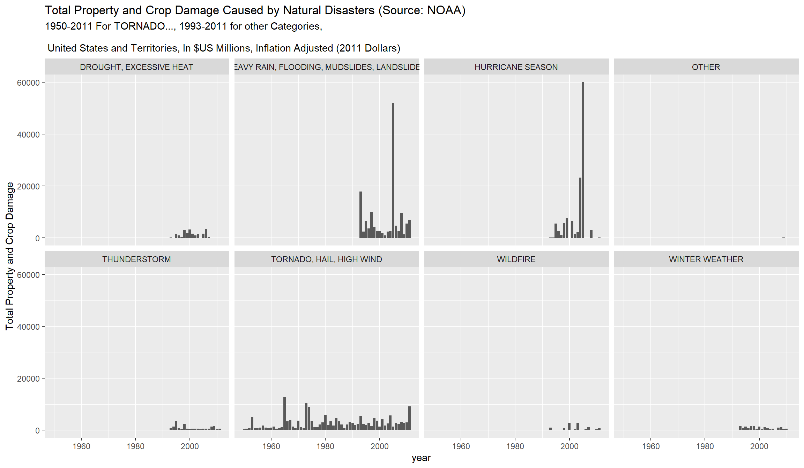
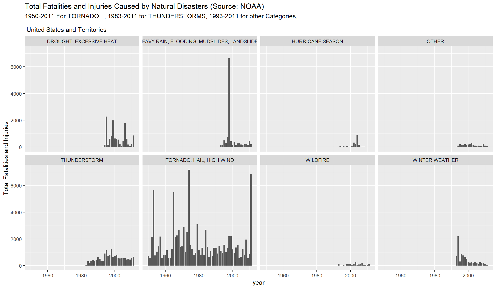
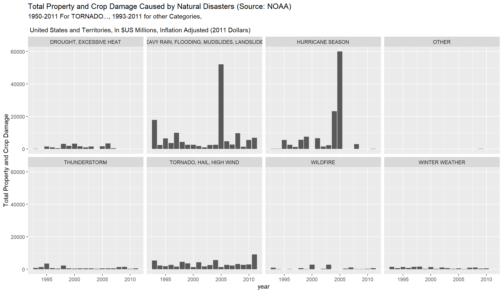

We analyze the storm data available from NOAA for the years 1950-2011. The data as loaded requires filtering for columns we will not use and several transformations. In our first transformation, we select the year for each observation out of a string, and later perform an inflation adjustment for the financial costs by year using the website [https://www.usinflationcalculator.com/]. We perform transformations into new columns that capture the sum of fatalities and injuries, and the sum of financial damage to property and crops. To get to the sum of financial damage to property and crops, we fist change the exponent for property (PROPDMGEXP) and crop (CROPDMGEXP) damage from a letter, any other character, or blank to a number. We use this number as the product to multiply the respective base (PROPDMG, CROPDMG) costs by. . We perform an outlier analysis of the fatalities and the sum of financial damage to property and crops, and make corrections to the data for the latter. We recode the event type (EVTYPE) to eight categories from hundreds of descriptions found in the data. Finally, we sum the data for each year and each category and plot the result for fatalities and injuries, and the sum of financial damage to property and crops.
We use the following R libraries.
library(data.table)
library(R.utils)
library(tidyverse)
library(ggplot2)
library(knitr)We use data.table’s fread to load the data. This dataset has 902,247 observations in 37 columns.
StormDataDT <- fread("./data/repdata_data_StormData.csv.bz2")
head(StormDataDT)## STATE__ BGN_DATE BGN_TIME TIME_ZONE COUNTY COUNTYNAME STATE
## 1: 1 4/18/1950 0:00:00 0130 CST 97 MOBILE AL
## 2: 1 4/18/1950 0:00:00 0145 CST 3 BALDWIN AL
## 3: 1 2/20/1951 0:00:00 1600 CST 57 FAYETTE AL
## 4: 1 6/8/1951 0:00:00 0900 CST 89 MADISON AL
## 5: 1 11/15/1951 0:00:00 1500 CST 43 CULLMAN AL
## 6: 1 11/15/1951 0:00:00 2000 CST 77 LAUDERDALE AL
## EVTYPE BGN_RANGE BGN_AZI BGN_LOCATI END_DATE END_TIME COUNTY_END
## 1: TORNADO 0 0
## 2: TORNADO 0 0
## 3: TORNADO 0 0
## 4: TORNADO 0 0
## 5: TORNADO 0 0
## 6: TORNADO 0 0
## COUNTYENDN END_RANGE END_AZI END_LOCATI LENGTH WIDTH F MAG FATALITIES
## 1: NA 0 14.0 100 3 0 0
## 2: NA 0 2.0 150 2 0 0
## 3: NA 0 0.1 123 2 0 0
## 4: NA 0 0.0 100 2 0 0
## 5: NA 0 0.0 150 2 0 0
## 6: NA 0 1.5 177 2 0 0
## INJURIES PROPDMG PROPDMGEXP CROPDMG CROPDMGEXP WFO STATEOFFIC ZONENAMES
## 1: 15 25.0 K 0
## 2: 0 2.5 K 0
## 3: 2 25.0 K 0
## 4: 2 2.5 K 0
## 5: 2 2.5 K 0
## 6: 6 2.5 K 0
## LATITUDE LONGITUDE LATITUDE_E LONGITUDE_ REMARKS REFNUM
## 1: 3040 8812 3051 8806 1
## 2: 3042 8755 0 0 2
## 3: 3340 8742 0 0 3
## 4: 3458 8626 0 0 4
## 5: 3412 8642 0 0 5
## 6: 3450 8748 0 0 6We filter columns we need for our analysis.
StormDataDT_recode <- StormDataDT[,
c("REFNUM","BGN_DATE","EVTYPE","FATALITIES","INJURIES",
"PROPDMG","PROPDMGEXP","CROPDMG","CROPDMGEXP")]
head(StormDataDT_recode)## REFNUM BGN_DATE EVTYPE FATALITIES INJURIES PROPDMG
## 1: 1 4/18/1950 0:00:00 TORNADO 0 15 25.0
## 2: 2 4/18/1950 0:00:00 TORNADO 0 0 2.5
## 3: 3 2/20/1951 0:00:00 TORNADO 0 2 25.0
## 4: 4 6/8/1951 0:00:00 TORNADO 0 2 2.5
## 5: 5 11/15/1951 0:00:00 TORNADO 0 2 2.5
## 6: 6 11/15/1951 0:00:00 TORNADO 0 6 2.5
## PROPDMGEXP CROPDMG CROPDMGEXP
## 1: K 0
## 2: K 0
## 3: K 0
## 4: K 0
## 5: K 0
## 6: K 0tail(StormDataDT_recode)## REFNUM BGN_DATE EVTYPE FATALITIES INJURIES PROPDMG
## 1: 902292 11/28/2011 0:00:00 WINTER WEATHER 0 0 0
## 2: 902293 11/30/2011 0:00:00 HIGH WIND 0 0 0
## 3: 902294 11/10/2011 0:00:00 HIGH WIND 0 0 0
## 4: 902295 11/8/2011 0:00:00 HIGH WIND 0 0 0
## 5: 902296 11/9/2011 0:00:00 BLIZZARD 0 0 0
## 6: 902297 11/28/2011 0:00:00 HEAVY SNOW 0 0 0
## PROPDMGEXP CROPDMG CROPDMGEXP
## 1: K 0 K
## 2: K 0 K
## 3: K 0 K
## 4: K 0 K
## 5: K 0 K
## 6: K 0 Kstr(StormDataDT_recode)## Classes 'data.table' and 'data.frame': 902297 obs. of 9 variables:
## $ REFNUM : num 1 2 3 4 5 6 7 8 9 10 ...
## $ BGN_DATE : chr "4/18/1950 0:00:00" "4/18/1950 0:00:00" "2/20/1951 0:00:00" "6/8/1951 0:00:00" ...
## $ EVTYPE : chr "TORNADO" "TORNADO" "TORNADO" "TORNADO" ...
## $ FATALITIES: num 0 0 0 0 0 0 0 0 1 0 ...
## $ INJURIES : num 15 0 2 2 2 6 1 0 14 0 ...
## $ PROPDMG : num 25 2.5 25 2.5 2.5 2.5 2.5 2.5 25 25 ...
## $ PROPDMGEXP: chr "K" "K" "K" "K" ...
## $ CROPDMG : num 0 0 0 0 0 0 0 0 0 0 ...
## $ CROPDMGEXP: chr "" "" "" "" ...
## - attr(*, ".internal.selfref")=<externalptr>We recode the year out of the BGN_DATE field. We select that column out to strip out the year.
BGN_DATE_year <- as.character(StormDataDT_recode$BGN_DATE)
for (i in 1:length(BGN_DATE_year)){
BGN_DATE_year[i] <-
unlist(substring(strsplit(BGN_DATE_year[[i]], "/")[[1]][[3]],1,4))
}
head(BGN_DATE_year)## [1] "1950" "1950" "1951" "1951" "1951" "1951"tail(BGN_DATE_year)## [1] "2011" "2011" "2011" "2011" "2011" "2011"length(BGN_DATE_year)## [1] 902297We bind the stripped year back into the dataset, and check that we still have a data.table data frame.
StormDataDT_recode <- cbind(StormDataDT_recode,BGN_DATE_year)
head(StormDataDT_recode)## REFNUM BGN_DATE EVTYPE FATALITIES INJURIES PROPDMG
## 1: 1 4/18/1950 0:00:00 TORNADO 0 15 25.0
## 2: 2 4/18/1950 0:00:00 TORNADO 0 0 2.5
## 3: 3 2/20/1951 0:00:00 TORNADO 0 2 25.0
## 4: 4 6/8/1951 0:00:00 TORNADO 0 2 2.5
## 5: 5 11/15/1951 0:00:00 TORNADO 0 2 2.5
## 6: 6 11/15/1951 0:00:00 TORNADO 0 6 2.5
## PROPDMGEXP CROPDMG CROPDMGEXP BGN_DATE_year
## 1: K 0 1950
## 2: K 0 1950
## 3: K 0 1951
## 4: K 0 1951
## 5: K 0 1951
## 6: K 0 1951class(StormDataDT_recode)## [1] "data.table" "data.frame"We take a look at the characters found in the property damage exponent (PROPDMGEXP) column.
recode_PROPDMGEXP <- StormDataDT_recode[,PROPDMGEXP]
class(recode_PROPDMGEXP)## [1] "character"table(recode_PROPDMGEXP)## recode_PROPDMGEXP
## - ? + 0 1 2 3 4 5
## 465934 1 8 5 216 25 13 4 4 28
## 6 7 8 B h H K m M
## 4 5 1 40 1 6 424665 7 11330We recode these values and check the result.
for (i in seq_along(recode_PROPDMGEXP)){
if(recode_PROPDMGEXP[[i]] == "1"){
recode_PROPDMGEXP[[i]] <- 10
}
if(recode_PROPDMGEXP[[i]] == "" |
recode_PROPDMGEXP[[i]] == "0" |
recode_PROPDMGEXP[[i]] == "-" |
recode_PROPDMGEXP[[i]] == "?" |
recode_PROPDMGEXP[[i]] == "+" |
recode_PROPDMGEXP[[i]] == "h" |
recode_PROPDMGEXP[[i]] == "H"){
recode_PROPDMGEXP[[i]] <- 1
}
if(recode_PROPDMGEXP[[i]] == "2"){
recode_PROPDMGEXP[[i]] <- 100
}
if(recode_PROPDMGEXP[[i]] == "k" |
recode_PROPDMGEXP[[i]] == "K" |
recode_PROPDMGEXP[[i]] == "3"){
recode_PROPDMGEXP[[i]] <- 1000
}
if(recode_PROPDMGEXP[[i]] == "4"){
recode_PROPDMGEXP[[i]] <- 10000
}
if(recode_PROPDMGEXP[[i]] == "5"){
recode_PROPDMGEXP[[i]] <- 100000
}
if(recode_PROPDMGEXP[[i]] == "m" |
recode_PROPDMGEXP[[i]] == "M" |
recode_PROPDMGEXP[[i]] == "6"){
recode_PROPDMGEXP[[i]] <- 1000000
}
if(recode_PROPDMGEXP[[i]] == "7"){
recode_PROPDMGEXP[[i]] <- 10000000
}
if(recode_PROPDMGEXP[[i]] == "8"){
recode_PROPDMGEXP[[i]] <- 100000000
}
if(recode_PROPDMGEXP[[i]] == "B"){
recode_PROPDMGEXP[[i]] <- 1000000000
}
}
table(recode_PROPDMGEXP)## recode_PROPDMGEXP
## 1 10 100 1000 10000 1e+05 1e+06 1e+07 1e+08 1e+09
## 466171 25 13 424669 4 28 11341 5 1 40We take a look at the characters found in the crop damage exponent (CROPDMGEXP) column.
recode_CROPDMGEXP <- StormDataDT_recode[,CROPDMGEXP]
class(recode_CROPDMGEXP)## [1] "character"table(recode_CROPDMGEXP)## recode_CROPDMGEXP
## ? 0 2 B k K m M
## 618413 7 19 1 9 21 281832 1 1994We recode these values and check the result.
for (i in seq_along(recode_CROPDMGEXP)){
if(recode_CROPDMGEXP[[i]] == "" |
recode_CROPDMGEXP[[i]] == "0" |
recode_CROPDMGEXP[[i]] == "?" ){
recode_CROPDMGEXP[[i]] <- 1
}
if(recode_CROPDMGEXP[[i]] == "2"){
recode_CROPDMGEXP[[i]] <- 100
}
if(recode_CROPDMGEXP[[i]] == "k" |
recode_CROPDMGEXP[[i]] == "K" ){
recode_CROPDMGEXP[[i]] <- 1000
}
if(recode_CROPDMGEXP[[i]] == "m" |
recode_CROPDMGEXP[[i]] == "M" ){
recode_CROPDMGEXP[[i]] <- 1000000
}
if(recode_CROPDMGEXP[[i]] == "B"){
recode_CROPDMGEXP[[i]] <- 1000000000
}
}
table(recode_CROPDMGEXP)## recode_CROPDMGEXP
## 1 100 1000 1e+06 1e+09
## 618439 1 281853 1995 9We bind the recoded columns into our working dataset (StormDataDT_recode). We test that we still have a data.table data frame and that our sums for numerical columns are indeed numerical.
StormDataDT_recode <- cbind(StormDataDT_recode,recode_PROPDMGEXP,recode_CROPDMGEXP)
head(StormDataDT_recode)## REFNUM BGN_DATE EVTYPE FATALITIES INJURIES PROPDMG
## 1: 1 4/18/1950 0:00:00 TORNADO 0 15 25.0
## 2: 2 4/18/1950 0:00:00 TORNADO 0 0 2.5
## 3: 3 2/20/1951 0:00:00 TORNADO 0 2 25.0
## 4: 4 6/8/1951 0:00:00 TORNADO 0 2 2.5
## 5: 5 11/15/1951 0:00:00 TORNADO 0 2 2.5
## 6: 6 11/15/1951 0:00:00 TORNADO 0 6 2.5
## PROPDMGEXP CROPDMG CROPDMGEXP BGN_DATE_year recode_PROPDMGEXP
## 1: K 0 1950 1000
## 2: K 0 1950 1000
## 3: K 0 1951 1000
## 4: K 0 1951 1000
## 5: K 0 1951 1000
## 6: K 0 1951 1000
## recode_CROPDMGEXP
## 1: 1
## 2: 1
## 3: 1
## 4: 1
## 5: 1
## 6: 1class(StormDataDT_recode)## [1] "data.table" "data.frame"sum(StormDataDT_recode$PROPDMG)## [1] 10884500sum(StormDataDT_recode$CROPDMG)## [1] 1377827We take the products from our records and come up with a sum of the total property and crop damage by individual event (REFNUM), and sum fatalities and injuries into an additional column.
StormDataDT_recode_totals <- StormDataDT_recode[,
PROPDMG.Total := PROPDMG*as.numeric(recode_PROPDMGEXP)]
head(StormDataDT_recode_totals)## REFNUM BGN_DATE EVTYPE FATALITIES INJURIES PROPDMG
## 1: 1 4/18/1950 0:00:00 TORNADO 0 15 25.0
## 2: 2 4/18/1950 0:00:00 TORNADO 0 0 2.5
## 3: 3 2/20/1951 0:00:00 TORNADO 0 2 25.0
## 4: 4 6/8/1951 0:00:00 TORNADO 0 2 2.5
## 5: 5 11/15/1951 0:00:00 TORNADO 0 2 2.5
## 6: 6 11/15/1951 0:00:00 TORNADO 0 6 2.5
## PROPDMGEXP CROPDMG CROPDMGEXP BGN_DATE_year recode_PROPDMGEXP
## 1: K 0 1950 1000
## 2: K 0 1950 1000
## 3: K 0 1951 1000
## 4: K 0 1951 1000
## 5: K 0 1951 1000
## 6: K 0 1951 1000
## recode_CROPDMGEXP PROPDMG.Total
## 1: 1 25000
## 2: 1 2500
## 3: 1 25000
## 4: 1 2500
## 5: 1 2500
## 6: 1 2500StormDataDT_recode_totals <- StormDataDT_recode[,
CROPDMG.Total := CROPDMG*as.numeric(recode_CROPDMGEXP)]
head(StormDataDT_recode_totals)## REFNUM BGN_DATE EVTYPE FATALITIES INJURIES PROPDMG
## 1: 1 4/18/1950 0:00:00 TORNADO 0 15 25.0
## 2: 2 4/18/1950 0:00:00 TORNADO 0 0 2.5
## 3: 3 2/20/1951 0:00:00 TORNADO 0 2 25.0
## 4: 4 6/8/1951 0:00:00 TORNADO 0 2 2.5
## 5: 5 11/15/1951 0:00:00 TORNADO 0 2 2.5
## 6: 6 11/15/1951 0:00:00 TORNADO 0 6 2.5
## PROPDMGEXP CROPDMG CROPDMGEXP BGN_DATE_year recode_PROPDMGEXP
## 1: K 0 1950 1000
## 2: K 0 1950 1000
## 3: K 0 1951 1000
## 4: K 0 1951 1000
## 5: K 0 1951 1000
## 6: K 0 1951 1000
## recode_CROPDMGEXP PROPDMG.Total CROPDMG.Total
## 1: 1 25000 0
## 2: 1 2500 0
## 3: 1 25000 0
## 4: 1 2500 0
## 5: 1 2500 0
## 6: 1 2500 0StormDataDT_recode_totals <- StormDataDT_recode[,
Fatalities.and.Injuries := FATALITIES + INJURIES]
head(StormDataDT_recode_totals)## REFNUM BGN_DATE EVTYPE FATALITIES INJURIES PROPDMG
## 1: 1 4/18/1950 0:00:00 TORNADO 0 15 25.0
## 2: 2 4/18/1950 0:00:00 TORNADO 0 0 2.5
## 3: 3 2/20/1951 0:00:00 TORNADO 0 2 25.0
## 4: 4 6/8/1951 0:00:00 TORNADO 0 2 2.5
## 5: 5 11/15/1951 0:00:00 TORNADO 0 2 2.5
## 6: 6 11/15/1951 0:00:00 TORNADO 0 6 2.5
## PROPDMGEXP CROPDMG CROPDMGEXP BGN_DATE_year recode_PROPDMGEXP
## 1: K 0 1950 1000
## 2: K 0 1950 1000
## 3: K 0 1951 1000
## 4: K 0 1951 1000
## 5: K 0 1951 1000
## 6: K 0 1951 1000
## recode_CROPDMGEXP PROPDMG.Total CROPDMG.Total Fatalities.and.Injuries
## 1: 1 25000 0 15
## 2: 1 2500 0 0
## 3: 1 25000 0 2
## 4: 1 2500 0 2
## 5: 1 2500 0 2
## 6: 1 2500 0 6StormDataDT_recode_totals <- StormDataDT_recode[,
Property.and.Crop.Damage := PROPDMG.Total + CROPDMG.Total]
head(StormDataDT_recode_totals)## REFNUM BGN_DATE EVTYPE FATALITIES INJURIES PROPDMG
## 1: 1 4/18/1950 0:00:00 TORNADO 0 15 25.0
## 2: 2 4/18/1950 0:00:00 TORNADO 0 0 2.5
## 3: 3 2/20/1951 0:00:00 TORNADO 0 2 25.0
## 4: 4 6/8/1951 0:00:00 TORNADO 0 2 2.5
## 5: 5 11/15/1951 0:00:00 TORNADO 0 2 2.5
## 6: 6 11/15/1951 0:00:00 TORNADO 0 6 2.5
## PROPDMGEXP CROPDMG CROPDMGEXP BGN_DATE_year recode_PROPDMGEXP
## 1: K 0 1950 1000
## 2: K 0 1950 1000
## 3: K 0 1951 1000
## 4: K 0 1951 1000
## 5: K 0 1951 1000
## 6: K 0 1951 1000
## recode_CROPDMGEXP PROPDMG.Total CROPDMG.Total Fatalities.and.Injuries
## 1: 1 25000 0 15
## 2: 1 2500 0 0
## 3: 1 25000 0 2
## 4: 1 2500 0 2
## 5: 1 2500 0 2
## 6: 1 2500 0 6
## Property.and.Crop.Damage
## 1: 25000
## 2: 2500
## 3: 25000
## 4: 2500
## 5: 2500
## 6: 2500We add up totals for the analysis before we perform the outlier analysis and recodes from it.
sum(StormDataDT_recode_totals$FATALITIES)## [1] 15145sum(StormDataDT_recode_totals$INJURIES)## [1] 140528sum(StormDataDT_recode_totals$Fatalities.and.Injuries)## [1] 155673sum(StormDataDT_recode_totals$PROPDMG.Total)## [1] 428224866095sum(StormDataDT_recode_totals$CROPDMG.Total)## [1] 49104192181sum(StormDataDT_recode_totals$Property.and.Crop.Damage)## [1] 477329058276We select the top financial cost events to make sure the values make sense.
StormDataDT_recode_large <- StormDataDT_recode_totals[Property.and.Crop.Damage >= 1000000000]
StormDataDT_recode_large$REFNUM## [1] 187564 194932 194933 194939 198375 207124 211887 243394 298057 347811
## [11] 366653 398999 444407 485535 488004 525145 529299 529307 529311 529384
## [21] 529446 564962 569065 569288 577615 577616 577623 581533 581535 581537
## [31] 598472 605943 639314 739514 739515 808257 834634 859151 860355 862563
## [41] 867679 867996We check each one and come up with a disposition for accepting all of the values, or which values I need to change. We only show here the ones for which we made changes to the data. We also show the narrative for Katrina because these are some of the largest costs in this analysis.
Disposition: needs changes.
–75 million and not $5 billion –Property.and.Crop.Damage 50000000 –PROPDMG 75 PROPDMGEXP M recode_PROPDMGEXP 1000000 PROPDMG.Total 75000000 Most of the damage estimates were at least $50 million.
Some estimates ranged between $80 and $100 million
StormDataDT[REFNUM == 187564,REMARKS]## [1] "What most called the worst winter storm in Alabama history struck Friday afternoon and lasted until mid-day Saturday. Snow began falling over north Alabama Friday afternoon, then spread southward overnight, reaching all the way to the Gulf Coast. The storm was caused by a strong and massive low pressure system that moved from the western Gulf of Mexico into the Florida panhandle, and up the Eastern Seaboard. The heaviest snow began after midnight when northerly winds of 40 to 55 mph became common. Frequent lightning discharges occurred for several hours giving an eerie blue-tinged glow to the atmosphere. By mid-day Saturday snow had accumulated to 6 to 12 inches over North Alabama and 2 to 4 inches at the Gulf Coast. A 40-mile-wide band of 12 to 20 inches fell from the Birmingham area northeastward to DeKalb and Cherokee counties, generally following the Appalachian Mountains. High winds combined with the heavy wet snow, felled numerous trees and knocked down power lines over a wide area. Numerous roads became impassable, and hundreds of thousands of homes were without power. It was estimated that 400,000 homes were without electricity, and many remained so for several days. Compounding the snow and power problems, temperatures fell well into the single digits and teens across much of the state Saturday night. For example, the temperature at the Birmingham Airport fell to 2 degrees, the coldest March temperature ever recorded. Only 4-wheel drive vehicles could barely maneuver roads, and some roads in north Alabama remained impassable until the following Tuesday. The snow and high winds knocked many radio and television stations off the air, and severely hampered emergency personnel responding to fires, stranded motorists, and those in dire need of medical attention. As if the snow, high winds, and extreme cold were not enough, many large trees fell onto homes and businesses. Numerous awnings, and roofs collapsed under the weight of the heavy snow. There were at least 14 deaths associated with the exposure or stress due from the storm. One person froze to death in their home. Six people died because of abandoned or disabled vehicles. Seven more people died outside due to exposure. One of the seven died while waiting in a bus shelter for a bus. Most of the damage estimates were at least $50 million. Some estimates ranged between $80 and $100 million. The following is a categorical list of the sex and ages of some of those who died. The age and sex of five of the victims was not available. (M172P) (M74O)(M60O)(F82O)(M52O)(F80O)(F72O)(M69O)(M50O) "StormDataDT_recode_large[REFNUM == 187564,
c("PROPDMG","PROPDMGEXP","CROPDMG","CROPDMGEXP",
"recode_PROPDMGEXP", "recode_CROPDMGEXP",
"PROPDMG.Total","CROPDMG.Total","Property.and.Crop.Damage")]## PROPDMG PROPDMGEXP CROPDMG CROPDMGEXP recode_PROPDMGEXP
## 1: 5 B 0 1e+09
## recode_CROPDMGEXP PROPDMG.Total CROPDMG.Total Property.and.Crop.Damage
## 1: 1 5e+09 0 5e+09Disposition: needs changes. “Twenty five percent of the states pecan crop will be lost for the next five to ten years at an estimated cost of $5.5 million per year”
–CROPDMG 55 CROPDMGEXP M recode_CROPDMGEXP 1000000 CROPDMG.Total 55000000 –Property.and.Crop.Damage 55500000
StormDataDT[REFNUM == 211887,REMARKS]## [1] "During the early morning hours on the 9th, freezing rain began falling over north Mississippi and continued through mid-day on the 10th. Ice accumulation of three to six inches were common over the affected area. Due to the weight of the ice, power lines, trees and tree limbs were downed. Many trees fell on houses and automobiles. The ice storm cause significant damage to approximately 3.7 million acres of commercial forestland. The value of damaged timber was estimated to be $1.3 billion. In addition to the damage of commercial timber was the damage to urban trees, estimated to be $27 million. Twenty five percent of the states pecan crop will be lost for the next five to ten years at an estimated cost of $5.5 million per year. Nearly 750,000 customers were with out power in the affected area. Customers were without power for up to a month. Over eight thousand utility poles were pulled down by the weight of the ice. Over 4,700 miles of power lines were down. Four-hundred-ninety-one water systems were affected with around 741,000 customers without water. Estimates of damage to utilities will run nearly $500 million. This is the worst ice storm to strike Mississippi since a severe ice storm struck the state in January 1951. "StormDataDT_recode_large[REFNUM == 211887,
c("PROPDMG","PROPDMGEXP","CROPDMG","CROPDMGEXP",
"recode_PROPDMGEXP", "recode_CROPDMGEXP",
"PROPDMG.Total","CROPDMG.Total","Property.and.Crop.Damage")]## PROPDMG PROPDMGEXP CROPDMG CROPDMGEXP recode_PROPDMGEXP
## 1: 500 K 5 B 1000
## recode_CROPDMGEXP PROPDMG.Total CROPDMG.Total Property.and.Crop.Damage
## 1: 1e+09 5e+05 5e+09 5000500000Disposition: seems an over-estimate.
PROPDMG 100 PROPDMGEXP M recode_PROPDMGEXP 100000000 Property.and.Crop.Damage 100000000
StormDataDT[REFNUM == 485535,REMARKS]## [1] "Significant flooding occurred throughout Jefferson County. Doppler radar estimated up to 12 inches of rain fell across the county in a few hours, with 5 to 8 inches of the total occurring in just one hour. Especially hard hit were Leeds, Brookside, Cardiff, Fultondale, Trussville and Birmingham. Numerous homes across the county were flooded. At least 120 roadways were impassable. Several sewage treatment plants were flooded and minor contamination occurred. Several roadways had pavement removed and then washed away. Several bridges were damaged. Two Birmingham schools were damaged from flooding. All the roadways in Leeds and in Brookside were impassable. Seventy four mobile homes were damaged in the Irondale Trailer Park. Trussville reported that many municipal buildings, police cars, fire trucks, utility trucks, and businesses were damaged. YMCA's Camp Coleman in Trussville had a mudslide that blocked the entrance to the camp. Several bridges in the complex were damaged. Brookside reported that the city hall and fire department were heavily damaged from the flood waters. Several area creeks rose to near record levels. These creeks include Village Creek, Five Mile Creek, and Turkey Creek. Fast moving water inundated a private school in Birmingham where children were evacuated. Thirteen semi-trailers were washed downstream as Five Mile Creek overflowed. The water rose higher than the gage itself. In Graysville, 10 people were rescued from their flooded vehicles and 20 homes were evacuated. In Fultondale, almost one million dollars of damage occurred to city services. At least 25 homes and businesses were damaged in Fultondale. Black Creek Park suffered significant damage to walking trails and ball fields. In Leeds, all the roads downtown were temporarily impassable at one point and subsequently closed. Leeds High School was damaged. In Gardendale, several homes were flooded and a bridge was washed out. In Warrior, a few homes were flooded and many roads were temporarily impassable. City Hall suffered minor damage. In Morris, one manufacturing plant was flooded. The Town Hall was struck by lightning which caused significant damage to all the electrical systems in the building. Numerous roads were flooded in Kimberly. \r"StormDataDT_recode_large[REFNUM == 485535,
c("PROPDMG","PROPDMGEXP","CROPDMG","CROPDMGEXP",
"recode_PROPDMGEXP", "recode_CROPDMGEXP",
"PROPDMG.Total","CROPDMG.Total","Property.and.Crop.Damage")]## PROPDMG PROPDMGEXP CROPDMG CROPDMGEXP recode_PROPDMGEXP
## 1: 1 B 0 K 1e+09
## recode_CROPDMGEXP PROPDMG.Total CROPDMG.Total Property.and.Crop.Damage
## 1: 1000 1e+09 0 1e+09Big outlier mistake: “The City of Napa had 600 homes with moderate damage, 150 damaged businesses with costs of at least $70 million.”
–PROPDMG OK PROPDMGEXP M and not B (BIG DIFFERENCE) –recode_PROPDMGEXP 1000000 –PROPDMG.Total 115000000 –Property.and.Crop.Damage (115+32.5)= 147500000
StormDataDT[REFNUM == 605943,REMARKS]## [1] "Major flooding continued into the early hours of January 1st, before the Napa River finally fell below flood stage and the water receeded. Flooding was severe in Downtown Napa from the Napa Creek and the City and Parks Department was hit with $6 million in damage alone. The City of Napa had 600 homes with moderate damage, 150 damaged businesses with costs of at least $70 million."StormDataDT_recode_large[REFNUM == 605943,
c("PROPDMG","PROPDMGEXP","CROPDMG","CROPDMGEXP",
"recode_PROPDMGEXP", "recode_CROPDMGEXP",
"PROPDMG.Total","CROPDMG.Total","Property.and.Crop.Damage")]## PROPDMG PROPDMGEXP CROPDMG CROPDMGEXP recode_PROPDMGEXP
## 1: 115 B 32.5 M 1e+09
## recode_CROPDMGEXP PROPDMG.Total CROPDMG.Total Property.and.Crop.Damage
## 1: 1e+06 1.15e+11 32500000 115032500000The second big error in the data
“The damages of 200 thousand dollars covered both the roof damage as well as money to replace the ruined food” –PROPDMG 200 PROPDMGEXP K recode_PROPDMGEXP 1000 –PROPDMG.Total 200000 Property.and.Crop.Damage 200000
StormDataDT[REFNUM == 834634,REMARKS]## [1] "EPISODE NARRATIVE: An unusual series of severe storms with damaging winds and hail struck many portions of the Phoenix area during the afternoon and evening hours.EVENT NARRATIVE: This storm moved from Firebird Lake, south of Chandler to the north Glendale/south Peoria area. This storm produced widespread golf ball to baseball sized hail along its path. Thousands of roofs and vehicles were damaged by the hail. Locations in northwest Phoenix and Glendale were impacted by this storm as well as the storm shortly after noon, compounding the damage. The football coach at Alhambra High School reported at least one injury when large hail struck the practice field. This palm-size hail is likely the largest hail ever reported in the Phoenix area.\nLarge hail, estimated to be upwards of 2 inches in diameter, punctured 34 skylights at the main warehouse of St. Mary's Food bank in Phoenix. As a result, water ruined approximately 20 percent of the food inventory, the equivalent of 1.4 million meals. Rain soaked the food, which was stored in cardboard boxes. This information was reported by St. Mary's spokesman Jerry Brown. The damages of 200 thousand dollars covered both the roof damage as well as money to replace the ruined food."StormDataDT_recode_large[REFNUM == 834634,
c("PROPDMG","PROPDMGEXP","CROPDMG","CROPDMGEXP",
"recode_PROPDMGEXP", "recode_CROPDMGEXP",
"PROPDMG.Total","CROPDMG.Total","Property.and.Crop.Damage")]## PROPDMG PROPDMGEXP CROPDMG CROPDMGEXP recode_PROPDMGEXP
## 1: 1.8 B 0 K 1e+09
## recode_CROPDMGEXP PROPDMG.Total CROPDMG.Total Property.and.Crop.Damage
## 1: 1000 1.8e+09 0 1.8e+09Disposition: seems like an over estimate.
–PROPDMG 150 PROPDMGEXP M recode_PROPDMGEXP 1000000 –PROPDMG.Total 150000000 Property.and.Crop.Damage 150000000
StormDataDT[REFNUM == 860355,REMARKS]## [1] "EPISODE NARRATIVE: A powerful storm system crossed the Southeast United States on Wednesday, April 27, 2011, resulting in a large and deadly tornado outbreak. This epic event broke the record for number of tornadoes in a day for the state of Alabama, becoming the most significant tornado outbreak in the stateb"StormDataDT_recode_large[REFNUM == 860355,
c("PROPDMG","PROPDMGEXP","CROPDMG","CROPDMGEXP",
"recode_PROPDMGEXP", "recode_CROPDMGEXP",
"PROPDMG.Total","CROPDMG.Total","Property.and.Crop.Damage")]## PROPDMG PROPDMGEXP CROPDMG CROPDMGEXP recode_PROPDMGEXP
## 1: 1.5 B 0 K 1e+09
## recode_CROPDMGEXP PROPDMG.Total CROPDMG.Total Property.and.Crop.Damage
## 1: 1000 1.5e+09 0 1.5e+09Disposition: seems like an over estimate. “The area known as Tunica Cut-Off was flooded as many as 357 homes sustained damage.”
–PROPDMG 100 PROPDMGEXP M recode_PROPDMGEXP 1000000 –PROPDMG.Total 100000000 Property.and.Crop.Damage 100000000
StormDataDT[REFNUM == 867679,REMARKS]## [1] "EPISODE NARRATIVE: Heavy rains continued to occur across the Mid-Mississippi Valley into the Ohio Valley during the beginning part of May. In addition, spring snow melt across the Dakotas and Minnesota continued to create higher than normal river levels on the Mississippi River. The combination of the snow melt and heavy rainfall produced record breaking flooding on the Mississippi River. Numerous roads were flooded and closed as a result. Homes and businesses were flooded in the area. Many farmers lost crops or were not able to plant due to flooded fields.EVENT NARRATIVE: The Mississippi River rose to near record levels during the beginning and middle part of May. The area known as Tunica Cut-Off was flooded as many as 357 homes sustained damage. All nine casinos in Tunica County were closed and sustained some damage from flooding. Several roads were flooded and/or damaged. Several hundred acres of fields were flooded as well. The river remained above flood stage through the end of the month."StormDataDT_recode_large[REFNUM == 867679,
c("PROPDMG","PROPDMGEXP","CROPDMG","CROPDMGEXP",
"recode_PROPDMGEXP", "recode_CROPDMGEXP",
"PROPDMG.Total","CROPDMG.Total","Property.and.Crop.Damage")]## PROPDMG PROPDMGEXP CROPDMG CROPDMGEXP recode_PROPDMGEXP
## 1: 1 B 0 K 1e+09
## recode_CROPDMGEXP PROPDMG.Total CROPDMG.Total Property.and.Crop.Damage
## 1: 1000 1e+09 0 1e+09Disposition: seems like an over estimate
–PROPDMG 200 PROPDMGEXP M recode_PROPDMGEXP 1000000 –PROPDMG.Total 200000000 #Property.and.Crop.Damage 200000000
StormDataDT[REFNUM == 867996,REMARKS]## [1] "EPISODE NARRATIVE: Heavy rains continued to occur across the Mid-Mississippi Valley into the Ohio Valley during the beginning part of May. In addition, spring snow melt across the Dakotas and Minnesota continued to create higher than normal river levels on the Mississippi River. The combination of the snow melt and heavy rainfall produced record breaking flooding on the Mississippi River. Numerous roads were flooded and closed as a result. Homes and businesses were flooded in the area. Many farmers lost crops or were not able to plant due to flooded fields.EVENT NARRATIVE: The Mississippi River rose to near record levels in Memphis during the beginning to middle part of May. Portions of Beale Street, Riverside Drive, Tom Lee Park and the Pyramid parking lot were flooded. Portions of Mud Island flooded as well including the Mud Island Ampitheater. The flooding wiped out nearly half mile section of the eastern bank of Presidents Island. As a result, the port at McKellar Lake was closed. Several businesses on Presidents Island sustained damage. Backwater from the Mississippi River caused the Wolf River to rise above flood stage. Numerous homes along the Wolf River in North Memphis and Raleigh were flooded as a result. Two mobile home parks in Millington were evacuated due to concerns of high water on Big Creek from backwater of the Mississippi River. The river remained above flood stage through the end of the month."StormDataDT_recode_large[REFNUM == 867996,
c("PROPDMG","PROPDMGEXP","CROPDMG","CROPDMGEXP",
"recode_PROPDMGEXP", "recode_CROPDMGEXP",
"PROPDMG.Total","CROPDMG.Total","Property.and.Crop.Damage")]## PROPDMG PROPDMGEXP CROPDMG CROPDMGEXP recode_PROPDMGEXP
## 1: 2 B 0 K 1e+09
## recode_CROPDMGEXP PROPDMG.Total CROPDMG.Total Property.and.Crop.Damage
## 1: 1000 2e+09 0 2e+09We found the fatalities and injuries data to be accurate throughout, and did not change any of the values in the data. Here are the cases for 100 or more fatalities.
#####################life cost outlier analysis
StormDataDT_recode_life <- StormDataDT_recode_totals[FATALITIES >= 100]
StormDataDT_recode_life$REFNUM## [1] 68670 148852 198690 862563For REFNUM 215144 we had to change EVTYPE to “WINTER WEATHER” because the original data contained a "" character, which causes an error when we run in Windows.
StormDataDT[REFNUM == 215144, EVTYPE]## [1] "FROST\\FREEZE"This is the code in which we implement our outlier analysis.
for (i in 1:nrow(StormDataDT_recode_totals)) {
if(StormDataDT_recode_totals$REFNUM[[i]] == 187564)
{
#disposition
#CROPDMG 55 CROPDMGEXP M recode_CROPDMGEXP 1000000 CROPDMG.Total 55000000
#Property.and.Crop.Damage 55500000
print("REFNUM == 187564")
print(i)
StormDataDT_recode_totals$PROPDMG[[i]] <- 75
StormDataDT_recode_totals$PROPDMGEXP[[i]] <- "M"
StormDataDT_recode_totals$recode_PROPDMGEXP[[i]] <- 1000000
StormDataDT_recode_totals$PROPDMG.Total[[i]] <- 75000000
StormDataDT_recode_totals$Property.and.Crop.Damage[[i]] <- 75000000
print(select(filter(StormDataDT_recode_totals,REFNUM == 187564),
PROPDMG.Total:Property.and.Crop.Damage))
}
if(StormDataDT_recode_totals$REFNUM[[i]] == 211887)
{
#disposition
#CROPDMG 55 CROPDMGEXP M recode_CROPDMGEXP 1000000 CROPDMG.Total 55000000
#Property.and.Crop.Damage 55500000
print("REFNUM == 211887")
print(i)
StormDataDT_recode_totals$CROPDMG[[i]] <- 55
StormDataDT_recode_totals$CROPDMGEXP[[i]] <- "M"
StormDataDT_recode_totals$recode_CROPDMGEXP[[i]] <- 1000000
StormDataDT_recode_totals$CROPDMG.Total[[i]] <- 55000000
StormDataDT_recode_totals$Property.and.Crop.Damage[[i]] <- 55500000
print(select(filter(StormDataDT_recode_totals,REFNUM == 211887),
PROPDMG.Total:Property.and.Crop.Damage))
}
###special recode
###for \
if(StormDataDT_recode_totals$REFNUM[[i]] == 215144)
{
#disposition
#StormDataDT[REFNUM == ,EVTYPE] <- "WINTER WEATHER"
#EVTYPE <- "WINTER WEATHER"
#Property.and.Crop.Damage 55500000
print("REFNUM == 215144")
print("Special EV_TYPE recode")
print(i)
StormDataDT_recode_totals$EVTYPE[[i]] <- "WINTER WEATHER"
print(select(filter(StormDataDT_recode_totals,REFNUM == 215144),
PROPDMG.Total:Property.and.Crop.Damage))
}
if(StormDataDT_recode_totals$REFNUM[[i]] == 485535)
{
#disposition
#seems an over-estimate
#PROPDMG 100 PROPDMGEXP M
#recode_PROPDMGEXP 1000000 Property.and.Crop.Damage 100000000
print("REFNUM == 485535")
print(i)
StormDataDT_recode_totals$PROPDMG[[i]] <- 100
StormDataDT_recode_totals$PROPDMGEXP[[i]] <- "M"
StormDataDT_recode_totals$recode_PROPDMGEXP[[i]] <- 1000000
StormDataDT_recode_totals$PROPDMG.Total[[i]] <- 100000000
StormDataDT_recode_totals$Property.and.Crop.Damage[[i]] <- 100000000
print(select(filter(StormDataDT_recode_totals,REFNUM == 485535),
PROPDMG.Total:Property.and.Crop.Damage))
}
if(StormDataDT_recode_totals$REFNUM[[i]] == 605943)
{
#disposition
#big outlier mistake
#PROPDMG OK PROPDMGEXP M and not B (BIG DIFFERENCE)
#recode_PROPDMGEXP 1000000
#PROPDMG.Total 115000000
#Property.and.Crop.Damage (115+32.5)= 147500000
print("REFNUM == 605943")
print(i)
StormDataDT_recode_totals$PROPDMGEXP[[i]] <- "M"
StormDataDT_recode_totals$recode_PROPDMGEXP[[i]] <- 1000000
StormDataDT_recode_totals$PROPDMG.Total[[i]] <- 115000000
StormDataDT_recode_totals$Property.and.Crop.Damage[[i]] <- 147500000
print(select(filter(StormDataDT_recode_totals,REFNUM == 605943),
PROPDMG.Total:Property.and.Crop.Damage))
}
if(StormDataDT_recode_totals$REFNUM[[i]] == 834634)
{
#disposition
#PROPDMG 200 PROPDMGEXP K recode_PROPDMGEXP 1000
# PROPDMG.Total 200000 Property.and.Crop.Damage 200000
print("REFNUM == 834634")
print(i)
StormDataDT_recode_totals$PROPDMG[[i]] <- 200
StormDataDT_recode_totals$PROPDMGEXP[[i]] <- "K"
StormDataDT_recode_totals$recode_PROPDMGEXP[[i]] <- 1000
StormDataDT_recode_totals$PROPDMG.Total[[i]] <- 200000
StormDataDT_recode_totals$Property.and.Crop.Damage[[i]] <- 200000
print(select(filter(StormDataDT_recode_totals,REFNUM == 834634),
PROPDMG.Total:Property.and.Crop.Damage))
}
if(StormDataDT_recode_totals$REFNUM[[i]] == 860355)
{
#disposition
#PROPDMG 150 PROPDMGEXP M recode_PROPDMGEXP 1000000
#PROPDMG.Total 150000000 Property.and.Crop.Damage 150000000
print("REFNUM == 860355")
print(i)
StormDataDT_recode_totals$PROPDMG[[i]] <- 150
StormDataDT_recode_totals$PROPDMGEXP[[i]] <- "M"
StormDataDT_recode_totals$recode_PROPDMGEXP[[i]] <- 1000000
StormDataDT_recode_totals$PROPDMG.Total[[i]] <- 150000000
StormDataDT_recode_totals$Property.and.Crop.Damage[[i]] <- 150000000
print(select(filter(StormDataDT_recode_totals,REFNUM == 860355),
PROPDMG.Total:Property.and.Crop.Damage))
}
if(StormDataDT_recode_totals$REFNUM[[i]] == 867679)
{
#disposition
#PROPDMG 100 PROPDMGEXP M recode_PROPDMGEXP 1000000
#PROPDMG.Total 100000000 Property.and.Crop.Damage 100000000
print("REFNUM == 867679")
print(i)
StormDataDT_recode_totals$PROPDMG[[i]] <- 100
StormDataDT_recode_totals$PROPDMGEXP[[i]] <- "M"
StormDataDT_recode_totals$recode_PROPDMGEXP[[i]] <- 1000000
StormDataDT_recode_totals$PROPDMG.Total[[i]] <- 100000000
StormDataDT_recode_totals$Property.and.Crop.Damage[[i]] <- 100000000
print(select(filter(StormDataDT_recode_totals,REFNUM == 867679),
PROPDMG.Total:Property.and.Crop.Damage))
}
if(StormDataDT_recode_totals$REFNUM[[i]] == 867996)
{
#disposition
#PROPDMG 200 PROPDMGEXP M recode_PROPDMGEXP 1000000
#PROPDMG.Total 200000000 #Property.and.Crop.Damage 200000000
print("REFNUM == 867996")
print(i)
StormDataDT_recode_totals$PROPDMG[[i]] <- 200
StormDataDT_recode_totals$PROPDMGEXP[[i]] <- "M"
StormDataDT_recode_totals$recode_PROPDMGEXP[[i]] <- 1000000
StormDataDT_recode_totals$PROPDMG.Total[[i]] <- 200000000
StormDataDT_recode_totals$Property.and.Crop.Damage[[i]] <- 200000000
print(select(filter(StormDataDT_recode_totals,REFNUM == 867996),
PROPDMG.Total:Property.and.Crop.Damage))
}
}## [1] "REFNUM == 187564"
## [1] 187564
## PROPDMG.Total CROPDMG.Total Fatalities.and.Injuries
## 1 7.5e+07 0 4
## Property.and.Crop.Damage
## 1 7.5e+07
## [1] "REFNUM == 211887"
## [1] 211900
## PROPDMG.Total CROPDMG.Total Fatalities.and.Injuries
## 1 5e+05 5.5e+07 0
## Property.and.Crop.Damage
## 1 55500000
## [1] "REFNUM == 215144"
## [1] "Special EV_TYPE recode"
## [1] 215228
## PROPDMG.Total CROPDMG.Total Fatalities.and.Injuries
## 1 5e+05 0 0
## Property.and.Crop.Damage
## 1 5e+05
## [1] "REFNUM == 485535"
## [1] 485577
## PROPDMG.Total CROPDMG.Total Fatalities.and.Injuries
## 1 1e+08 0 0
## Property.and.Crop.Damage
## 1 1e+08
## [1] "REFNUM == 605943"
## [1] 605953
## PROPDMG.Total CROPDMG.Total Fatalities.and.Injuries
## 1 1.15e+08 32500000 0
## Property.and.Crop.Damage
## 1 147500000
## [1] "REFNUM == 834634"
## [1] 834674
## PROPDMG.Total CROPDMG.Total Fatalities.and.Injuries
## 1 2e+05 0 1
## Property.and.Crop.Damage
## 1 2e+05
## [1] "REFNUM == 860355"
## [1] 860386
## PROPDMG.Total CROPDMG.Total Fatalities.and.Injuries
## 1 1.5e+08 0 844
## Property.and.Crop.Damage
## 1 1.5e+08
## [1] "REFNUM == 867679"
## [1] 867749
## PROPDMG.Total CROPDMG.Total Fatalities.and.Injuries
## 1 1e+08 0 0
## Property.and.Crop.Damage
## 1 1e+08
## [1] "REFNUM == 867996"
## [1] 868046
## PROPDMG.Total CROPDMG.Total Fatalities.and.Injuries
## 1 2e+08 0 0
## Property.and.Crop.Damage
## 1 2e+08We load the data from the recodes into our working dataset, and then filter that dataset for non-zero values for the fields in our analysis.
head(StormDataDT_recode_totals)## REFNUM BGN_DATE EVTYPE FATALITIES INJURIES PROPDMG
## 1: 1 4/18/1950 0:00:00 TORNADO 0 15 25.0
## 2: 2 4/18/1950 0:00:00 TORNADO 0 0 2.5
## 3: 3 2/20/1951 0:00:00 TORNADO 0 2 25.0
## 4: 4 6/8/1951 0:00:00 TORNADO 0 2 2.5
## 5: 5 11/15/1951 0:00:00 TORNADO 0 2 2.5
## 6: 6 11/15/1951 0:00:00 TORNADO 0 6 2.5
## PROPDMGEXP CROPDMG CROPDMGEXP BGN_DATE_year recode_PROPDMGEXP
## 1: K 0 1950 1000
## 2: K 0 1950 1000
## 3: K 0 1951 1000
## 4: K 0 1951 1000
## 5: K 0 1951 1000
## 6: K 0 1951 1000
## recode_CROPDMGEXP PROPDMG.Total CROPDMG.Total Fatalities.and.Injuries
## 1: 1 25000 0 15
## 2: 1 2500 0 0
## 3: 1 25000 0 2
## 4: 1 2500 0 2
## 5: 1 2500 0 2
## 6: 1 2500 0 6
## Property.and.Crop.Damage
## 1: 25000
## 2: 2500
## 3: 25000
## 4: 2500
## 5: 2500
## 6: 2500nrow(StormDataDT_recode_totals)## [1] 902297#[1] 902297
StormDataDT_recode <- StormDataDT_recode_totals[,
c("BGN_DATE_year","EVTYPE","FATALITIES","INJURIES",
"PROPDMG.Total","CROPDMG.Total",
"Fatalities.and.Injuries","Property.and.Crop.Damage")]
class(StormDataDT_recode)## [1] "data.table" "data.frame"head(StormDataDT_recode)## BGN_DATE_year EVTYPE FATALITIES INJURIES PROPDMG.Total CROPDMG.Total
## 1: 1950 TORNADO 0 15 25000 0
## 2: 1950 TORNADO 0 0 2500 0
## 3: 1951 TORNADO 0 2 25000 0
## 4: 1951 TORNADO 0 2 2500 0
## 5: 1951 TORNADO 0 2 2500 0
## 6: 1951 TORNADO 0 6 2500 0
## Fatalities.and.Injuries Property.and.Crop.Damage
## 1: 15 25000
## 2: 0 2500
## 3: 2 25000
## 4: 2 2500
## 5: 2 2500
## 6: 6 2500#check for zeroes
nrow(StormDataDT_recode[FATALITIES == 0 & INJURIES == 0])## [1] 880368nrow(StormDataDT_recode[Property.and.Crop.Damage == 0])## [1] 657266nrow(StormDataDT_recode[(FATALITIES == 0 & INJURIES == 0) |
Property.and.Crop.Damage == 0])## [1] 889970nrow(StormDataDT_recode[!((FATALITIES == 0 & INJURIES == 0) |
Property.and.Crop.Damage == 0)])## [1] 12327StormDataDT_recode_nonzero <- StormDataDT_recode[!(FATALITIES == 0 & INJURIES == 0 &
Property.and.Crop.Damage == 0)]
nrow(StormDataDT_recode_nonzero)## [1] 254633The results in the nonzero skim of the data should be the same as they were in the working dataset that had all the zero value rows. Here are the sums for the working dataset.
sum(StormDataDT_recode_totals$FATALITIES)## [1] 15145sum(StormDataDT_recode_totals$INJURIES)## [1] 140528sum(StormDataDT_recode_totals$Fatalities.and.Injuries)## [1] 155673sum(StormDataDT_recode_totals$PROPDMG.Total)## [1] 301665066095sum(StormDataDT_recode_totals$CROPDMG.Total)## [1] 44159192181sum(StormDataDT_recode_totals$Property.and.Crop.Damage)## [1] 345824258276Here are the sums for the filtered dataset.
sum(StormDataDT_recode_nonzero$FATALITIES)## [1] 15145sum(StormDataDT_recode_nonzero$INJURIES)## [1] 140528sum(StormDataDT_recode_nonzero$Fatalities.and.Injuries)## [1] 155673sum(StormDataDT_recode_nonzero$PROPDMG.Total)## [1] 301665066095sum(StormDataDT_recode_nonzero$CROPDMG.Total)## [1] 44159192181sum(StormDataDT_recode_nonzero$Property.and.Crop.Damage)## [1] 345824258276We use the U.S. Inflation Calculator website [https://www.usinflationcalculator.com] to find out the value of 2011 dollars for the years 1950 to 2010. We insert this data into a table and join it with our data.
Inflation_multiplier <- tribble(
~year, ~Inflation.Adjustment,
#----/----------------------
1950 , 9.33 ,
1951 , 8.65 ,
1952 , 8.49 ,
1953 , 8.42 ,
1954 , 8.36 ,
1955 , 8.39 ,
1956 , 8.27 ,
1957 , 8 ,
1958 , 7.78 ,
1959 , 7.73 ,
1960 , 7.6 ,
1961 , 7.52 ,
1962 , 7.45 ,
1963 , 7.35 ,
1964 , 7.26 ,
1965 , 7.14 ,
1966 , 6.94 ,
1967 , 6.73 ,
1968 , 6.46 ,
1969 , 6.13 ,
1970 , 5.8 ,
1971 , 5.55 ,
1972 , 5.38 ,
1973 , 5.07 ,
1974 , 4.56 ,
1975 , 4.18 ,
1976 , 3.95 ,
1977 , 3.71 ,
1978 , 3.45 ,
1979 , 3.1 ,
1980 , 2.73 ,
1981 , 2.47 ,
1982 , 2.33 ,
1983 , 2.26 ,
1984 , 2.16 ,
1985 , 2.09 ,
1986 , 2.05 ,
1987 , 1.98 ,
1988 , 1.9 ,
1989 , 1.81 ,
1990 , 1.72 ,
1991 , 1.65 ,
1992 , 1.6 ,
1993 , 1.56 ,
1994 , 1.52 ,
1995 , 1.48 ,
1996 , 1.43 ,
1997 , 1.4 ,
1998 , 1.38 ,
1999 , 1.35 ,
2000 , 1.31 ,
2001 , 1.27 ,
2002 , 1.25 ,
2003 , 1.22 ,
2004 , 1.19 ,
2005 , 1.15 ,
2006 , 1.12 ,
2007 , 1.08 ,
2008 , 1.04 ,
2009 , 1.05 ,
2010 , 1.03 ,
2011 , 1
)
head(Inflation_multiplier)## # A tibble: 6 x 2
## year Inflation.Adjustment
## <dbl> <dbl>
## 1 1950 9.33
## 2 1951 8.65
## 3 1952 8.49
## 4 1953 8.42
## 5 1954 8.36
## 6 1955 8.39tail(Inflation_multiplier)## # A tibble: 6 x 2
## year Inflation.Adjustment
## <dbl> <dbl>
## 1 2006 1.12
## 2 2007 1.08
## 3 2008 1.04
## 4 2009 1.05
## 5 2010 1.03
## 6 2011 1StormDataDT_recode_nonzero <- as_tibble(StormDataDT_recode_nonzero)
StormDataDT_recode_nonzero <-
mutate(StormDataDT_recode_nonzero, year = as.numeric(BGN_DATE_year))
StormDataDT_recode_infla <- StormDataDT_recode_nonzero %>%
inner_join(Inflation_multiplier, by = "year")
names(StormDataDT_recode_infla)## [1] "BGN_DATE_year" "EVTYPE"
## [3] "FATALITIES" "INJURIES"
## [5] "PROPDMG.Total" "CROPDMG.Total"
## [7] "Fatalities.and.Injuries" "Property.and.Crop.Damage"
## [9] "year" "Inflation.Adjustment"head(StormDataDT_recode_infla$Inflation.Adjustment,100)## [1] 9.33 9.33 8.65 8.65 8.65 8.65 8.65 8.49 8.49 8.49 8.49 8.49 8.49 8.49
## [15] 8.49 8.49 8.49 8.49 8.49 8.49 8.42 8.42 8.42 8.42 8.42 8.42 8.42 8.42
## [29] 8.42 8.42 8.42 8.42 8.42 8.42 8.42 8.42 8.42 8.42 8.42 8.42 8.42 8.42
## [43] 8.36 8.36 8.36 8.36 8.36 8.36 8.36 8.36 8.36 8.36 8.39 8.39 8.39 8.39
## [57] 8.39 8.39 8.39 8.39 8.27 8.27 8.27 8.27 8.27 8.27 8.27 8.00 8.00 8.00
## [71] 8.00 8.00 8.00 8.00 8.00 8.00 8.00 8.00 8.00 8.00 8.00 8.00 8.00 8.00
## [85] 8.00 8.00 8.00 8.00 8.00 8.00 8.00 8.00 8.00 8.00 8.00 8.00 8.00 8.00
## [99] 8.00 8.00tail(StormDataDT_recode_infla$Inflation.Adjustment,100)## [1] 1 1 1 1 1 1 1 1 1 1 1 1 1 1 1 1 1 1 1 1 1 1 1 1 1 1 1 1 1 1 1 1 1 1 1
## [36] 1 1 1 1 1 1 1 1 1 1 1 1 1 1 1 1 1 1 1 1 1 1 1 1 1 1 1 1 1 1 1 1 1 1 1
## [71] 1 1 1 1 1 1 1 1 1 1 1 1 1 1 1 1 1 1 1 1 1 1 1 1 1 1 1 1 1 1StormDataDT_recode_infla <- select(StormDataDT_recode_infla, -(BGN_DATE_year))
StormDataDT_recode_infla_adjusted <- transmute(StormDataDT_recode_infla, year,
EVTYPE, FATALITIES, INJURIES, Fatalities.and.Injuries,
PROPDMG.Total.Infla = PROPDMG.Total * Inflation.Adjustment,
CROPDMG.Total.Infla = CROPDMG.Total * Inflation.Adjustment,
Property.and.Crop.Damage.Infla = Property.and.Crop.Damage * Inflation.Adjustment)We check the inflation adjusted dataset.
head(StormDataDT_recode_infla_adjusted)## # A tibble: 6 x 8
## year EVTYPE FATALITIES INJURIES Fatalities.and.~ PROPDMG.Total.I~
## <dbl> <chr> <dbl> <dbl> <dbl> <dbl>
## 1 1950 TORNA~ 0 15 15 233250
## 2 1950 TORNA~ 0 0 0 23325
## 3 1951 TORNA~ 0 2 2 216250
## 4 1951 TORNA~ 0 2 2 21625
## 5 1951 TORNA~ 0 2 2 21625
## 6 1951 TORNA~ 0 6 6 21625
## # ... with 2 more variables: CROPDMG.Total.Infla <dbl>,
## # Property.and.Crop.Damage.Infla <dbl>tail(StormDataDT_recode_infla_adjusted)## # A tibble: 6 x 8
## year EVTYPE FATALITIES INJURIES Fatalities.and.~ PROPDMG.Total.I~
## <dbl> <chr> <dbl> <dbl> <dbl> <dbl>
## 1 2011 WINTE~ 0 0 0 2000
## 2 2011 WINTE~ 0 0 0 5000
## 3 2011 STRON~ 0 0 0 600
## 4 2011 STRON~ 0 0 0 1000
## 5 2011 DROUG~ 0 0 0 2000
## 6 2011 HIGH ~ 0 0 0 7500
## # ... with 2 more variables: CROPDMG.Total.Infla <dbl>,
## # Property.and.Crop.Damage.Infla <dbl>nrow(StormDataDT_recode_infla_adjusted)## [1] 254633We group the EVTYPE desriptions into eight categories:
First, we sum by year and EVTYPE to recode a given EVTYPE in the smallest possible number of instances. We place that dataset in test copy that we will eventually use as our final copy.
StormDataDT_recode_summed <-
StormDataDT_recode_infla_adjusted %>% group_by(year, EVTYPE) %>%
summarize(Property.and.Crop.Damage.Sum = sum(Property.and.Crop.Damage.Infla),
Fatalities.and.Injuries.Sum = sum(Fatalities.and.Injuries))
head(StormDataDT_recode_summed)## # A tibble: 6 x 4
## # Groups: year [6]
## year EVTYPE Property.and.Crop.Damage.Sum Fatalities.and.Injuries.Sum
## <dbl> <chr> <dbl> <dbl>
## 1 1950 TORNADO 321713794. 729
## 2 1951 TORNADO 566626814. 558
## 3 1952 TORNADO 798928018. 2145
## 4 1953 TORNADO 5019201574 5650
## 5 1954 TORNADO 717332475. 751
## 6 1955 TORNADO 693522686. 1055nrow(StormDataDT_recode_summed)## [1] 1378StormDataDT_recode_summed_test <- StormDataDT_recode_summed
class(StormDataDT_recode_summed_test)## [1] "grouped_df" "tbl_df" "tbl" "data.frame"Here is the code.
for (i in 1:nrow(StormDataDT_recode_summed_test)) {
if (StormDataDT_recode_summed_test$EVTYPE[[i]] =="DROUGHT" |
StormDataDT_recode_summed_test$EVTYPE[[i]] =="DROUGHT/EXCESSIVE HEAT" |
StormDataDT_recode_summed_test$EVTYPE[[i]] =="EXCESSIVE HEAT" |
StormDataDT_recode_summed_test$EVTYPE[[i]] =="HEAT" |
StormDataDT_recode_summed_test$EVTYPE[[i]] =="HEAT WAVE" |
StormDataDT_recode_summed_test$EVTYPE[[i]] =="HEAT WAVE DROUGHT" |
StormDataDT_recode_summed_test$EVTYPE[[i]] =="HEAT WAVES" |
StormDataDT_recode_summed_test$EVTYPE[[i]] =="RECORD HEAT" |
StormDataDT_recode_summed_test$EVTYPE[[i]] =="RECORD/EXCESSIVE HEAT" |
StormDataDT_recode_summed_test$EVTYPE[[i]] =="UNSEASONABLY WARM" |
StormDataDT_recode_summed_test$EVTYPE[[i]] =="UNSEASONABLY WARM AND DRY" |
StormDataDT_recode_summed_test$EVTYPE[[i]] =="WARM WEATHER" |
#straggler
StormDataDT_recode_summed_test$EVTYPE[[i]] =="Heat Wave" )
{StormDataDT_recode_summed_test$EVTYPE[[i]] <- "DROUGHT, EXCESSIVE HEAT"}
if(StormDataDT_recode_summed_test$EVTYPE[[i]] ==" HIGH SURF ADVISORY" |
StormDataDT_recode_summed_test$EVTYPE[[i]] ==" FLASH FLOOD" |
StormDataDT_recode_summed_test$EVTYPE[[i]] =="BREAKUP FLOODING" |
StormDataDT_recode_summed_test$EVTYPE[[i]] =="COASTAL FLOODING/EROSION" |
StormDataDT_recode_summed_test$EVTYPE[[i]] =="COASTAL EROSION" |
StormDataDT_recode_summed_test$EVTYPE[[i]] =="COASTAL FLOOD" |
StormDataDT_recode_summed_test$EVTYPE[[i]] =="COASTAL FLOODING" |
StormDataDT_recode_summed_test$EVTYPE[[i]] =="COASTAL FLOODING/EROSION" |
StormDataDT_recode_summed_test$EVTYPE[[i]] =="COASTAL STORM" |
StormDataDT_recode_summed_test$EVTYPE[[i]] =="COASTAL SURGE" |
StormDataDT_recode_summed_test$EVTYPE[[i]] =="COASTALSTORM" |
StormDataDT_recode_summed_test$EVTYPE[[i]] =="Coastal Flood" |
StormDataDT_recode_summed_test$EVTYPE[[i]] =="Coastal Flooding" |
StormDataDT_recode_summed_test$EVTYPE[[i]] =="Coastal Storm" |
StormDataDT_recode_summed_test$EVTYPE[[i]] =="Erosion/Cstl Flood" |
StormDataDT_recode_summed_test$EVTYPE[[i]] =="EXCESSIVE RAINFALL" |
StormDataDT_recode_summed_test$EVTYPE[[i]] =="EXCESSIVE SNOW" |
StormDataDT_recode_summed_test$EVTYPE[[i]] =="EXTREME HEAT" |
StormDataDT_recode_summed_test$EVTYPE[[i]] =="FLASH FLOOD" |
StormDataDT_recode_summed_test$EVTYPE[[i]] =="FLASH FLOOD - HEAVY RAIN" |
StormDataDT_recode_summed_test$EVTYPE[[i]] =="FLASH FLOOD LANDSLIDES" |
StormDataDT_recode_summed_test$EVTYPE[[i]] =="FLASH FLOOD WINDS" |
StormDataDT_recode_summed_test$EVTYPE[[i]] =="FLASH FLOOD/" |
StormDataDT_recode_summed_test$EVTYPE[[i]] =="FLASH FLOOD/ STREET" |
StormDataDT_recode_summed_test$EVTYPE[[i]] =="FLASH FLOOD/FLOOD" |
StormDataDT_recode_summed_test$EVTYPE[[i]] =="FLASH FLOOD/LANDSLIDE" |
StormDataDT_recode_summed_test$EVTYPE[[i]] =="FLASH FLOODING" |
StormDataDT_recode_summed_test$EVTYPE[[i]] =="FLASH FLOODING/FLOOD" |
StormDataDT_recode_summed_test$EVTYPE[[i]] =="FLASH FLOODS" |
StormDataDT_recode_summed_test$EVTYPE[[i]] =="FLOOD" |
StormDataDT_recode_summed_test$EVTYPE[[i]] =="FLOOD & HEAVY RAIN" |
StormDataDT_recode_summed_test$EVTYPE[[i]] =="FLOOD FLASH" |
StormDataDT_recode_summed_test$EVTYPE[[i]] =="FLOOD/FLASH" |
StormDataDT_recode_summed_test$EVTYPE[[i]] =="FLOOD/FLASH FLOOD" |
StormDataDT_recode_summed_test$EVTYPE[[i]] =="FLOOD/FLASH/FLOOD" |
StormDataDT_recode_summed_test$EVTYPE[[i]] =="FLOOD/FLASHFLOOD" |
StormDataDT_recode_summed_test$EVTYPE[[i]] =="FLOOD/RAIN/WINDS" |
StormDataDT_recode_summed_test$EVTYPE[[i]] =="FLOOD/RIVER FLOOD" |
StormDataDT_recode_summed_test$EVTYPE[[i]] =="FLOODING" |
StormDataDT_recode_summed_test$EVTYPE[[i]] =="FLOODING/HEAVY RAIN" |
StormDataDT_recode_summed_test$EVTYPE[[i]] =="FLOODS" |
StormDataDT_recode_summed_test$EVTYPE[[i]] =="HAZARDOUS SURF" |
StormDataDT_recode_summed_test$EVTYPE[[i]] =="HEAVY RAIN" |
StormDataDT_recode_summed_test$EVTYPE[[i]] =="HEAVY RAIN AND FLOOD" |
StormDataDT_recode_summed_test$EVTYPE[[i]] =="Heavy Rain/High Surf" |
StormDataDT_recode_summed_test$EVTYPE[[i]] =="HEAVY RAIN/LIGHTNING" |
StormDataDT_recode_summed_test$EVTYPE[[i]] =="HEAVY RAIN/SEVERE WEATHER" |
StormDataDT_recode_summed_test$EVTYPE[[i]] =="HEAVY RAIN/SMALL STREAM URBAN" |
StormDataDT_recode_summed_test$EVTYPE[[i]] =="HEAVY RAIN/SNOW" |
StormDataDT_recode_summed_test$EVTYPE[[i]] =="HEAVY RAINS" |
StormDataDT_recode_summed_test$EVTYPE[[i]] =="HEAVY RAINS/FLOODING" |
StormDataDT_recode_summed_test$EVTYPE[[i]] =="HEAVY SEAS" |
StormDataDT_recode_summed_test$EVTYPE[[i]] =="HEAVY SHOWER" |
StormDataDT_recode_summed_test$EVTYPE[[i]] =="HEAVY SURF" |
StormDataDT_recode_summed_test$EVTYPE[[i]] =="Heavy surf and wind" |
StormDataDT_recode_summed_test$EVTYPE[[i]] =="HEAVY SURF COASTAL FLOODING" |
StormDataDT_recode_summed_test$EVTYPE[[i]] =="HEAVY SURF/HIGH SURF" |
StormDataDT_recode_summed_test$EVTYPE[[i]] =="HEAVY SWELLS" |
StormDataDT_recode_summed_test$EVTYPE[[i]] =="HIGH WINDS" |
StormDataDT_recode_summed_test$EVTYPE[[i]] =="HIGH SEAS" |
StormDataDT_recode_summed_test$EVTYPE[[i]] =="HIGH SURF" |
StormDataDT_recode_summed_test$EVTYPE[[i]] =="HIGH SWELLS" |
StormDataDT_recode_summed_test$EVTYPE[[i]] =="HIGH TIDES" |
StormDataDT_recode_summed_test$EVTYPE[[i]] =="HIGH WATER" |
StormDataDT_recode_summed_test$EVTYPE[[i]] =="HIGH WAVES" |
StormDataDT_recode_summed_test$EVTYPE[[i]] =="HVY RAIN" |
StormDataDT_recode_summed_test$EVTYPE[[i]] =="LAKE FLOOD" |
StormDataDT_recode_summed_test$EVTYPE[[i]] =="LAKE-EFFECT SNOW" |
StormDataDT_recode_summed_test$EVTYPE[[i]] =="LAKESHORE FLOOD" |
StormDataDT_recode_summed_test$EVTYPE[[i]] =="LANDSLIDE" |
StormDataDT_recode_summed_test$EVTYPE[[i]] =="LANDSLIDES" |
StormDataDT_recode_summed_test$EVTYPE[[i]] =="Landslump" |
StormDataDT_recode_summed_test$EVTYPE[[i]] =="LANDSPOUT" |
StormDataDT_recode_summed_test$EVTYPE[[i]] =="MAJOR FLOOD" |
StormDataDT_recode_summed_test$EVTYPE[[i]] =="MARINE HIGH WIND" |
StormDataDT_recode_summed_test$EVTYPE[[i]] =="MARINE STRONG WIND" |
StormDataDT_recode_summed_test$EVTYPE[[i]] =="MINOR FLOODING" |
StormDataDT_recode_summed_test$EVTYPE[[i]] =="MIXED PRECIP" |
StormDataDT_recode_summed_test$EVTYPE[[i]] =="Mixed Precipitation" |
StormDataDT_recode_summed_test$EVTYPE[[i]] =="MUD SLIDE" |
StormDataDT_recode_summed_test$EVTYPE[[i]] =="MUD SLIDES" |
StormDataDT_recode_summed_test$EVTYPE[[i]] =="MUD SLIDES URBAN FLOODING" |
StormDataDT_recode_summed_test$EVTYPE[[i]] =="MUDSLIDE" |
StormDataDT_recode_summed_test$EVTYPE[[i]] =="MUDSLIDES" |
StormDataDT_recode_summed_test$EVTYPE[[i]] =="RAIN" |
StormDataDT_recode_summed_test$EVTYPE[[i]] =="RAIN/SNOW" |
StormDataDT_recode_summed_test$EVTYPE[[i]] =="RAIN/WIND" |
StormDataDT_recode_summed_test$EVTYPE[[i]] =="RAINSTORM" |
StormDataDT_recode_summed_test$EVTYPE[[i]] =="RAPIDLY RISING WATER" |
StormDataDT_recode_summed_test$EVTYPE[[i]] =="RECORD RAINFALL" |
StormDataDT_recode_summed_test$EVTYPE[[i]] =="RIP CURRENTS/HEAVY SURF" |
StormDataDT_recode_summed_test$EVTYPE[[i]] =="RIVER AND STREAM FLOOD" |
StormDataDT_recode_summed_test$EVTYPE[[i]] =="RIVER FLOOD" |
StormDataDT_recode_summed_test$EVTYPE[[i]] =="RIVER FLOODING" |
StormDataDT_recode_summed_test$EVTYPE[[i]] =="ROCK SLIDE" |
StormDataDT_recode_summed_test$EVTYPE[[i]] =="ROGUE WAVE" |
StormDataDT_recode_summed_test$EVTYPE[[i]] =="ROUGH SEAS" |
StormDataDT_recode_summed_test$EVTYPE[[i]] =="ROUGH SURF" |
StormDataDT_recode_summed_test$EVTYPE[[i]] =="RURAL FLOOD" |
StormDataDT_recode_summed_test$EVTYPE[[i]] =="SMALL STREAM FLOOD" |
StormDataDT_recode_summed_test$EVTYPE[[i]] =="STORM FORCE WINDS" |
StormDataDT_recode_summed_test$EVTYPE[[i]] =="STORM SURGE" |
StormDataDT_recode_summed_test$EVTYPE[[i]] =="STORM SURGE/TIDE" |
StormDataDT_recode_summed_test$EVTYPE[[i]] =="TIDAL FLOODING" |
StormDataDT_recode_summed_test$EVTYPE[[i]] =="TORNADO F0" |
StormDataDT_recode_summed_test$EVTYPE[[i]] =="TORNADO F1" |
StormDataDT_recode_summed_test$EVTYPE[[i]] =="TORNADO F2" |
StormDataDT_recode_summed_test$EVTYPE[[i]] =="TORNADO F3" |
StormDataDT_recode_summed_test$EVTYPE[[i]] =="TORNADOES" |
StormDataDT_recode_summed_test$EVTYPE[[i]] =="Torrential Rainfall" |
StormDataDT_recode_summed_test$EVTYPE[[i]] =="UNSEASONAL RAIN" |
StormDataDT_recode_summed_test$EVTYPE[[i]] =="URBAN AND SMALL" |
StormDataDT_recode_summed_test$EVTYPE[[i]] =="URBAN AND SMALL STREAM FLOODIN" |
StormDataDT_recode_summed_test$EVTYPE[[i]] =="URBAN FLOOD" |
StormDataDT_recode_summed_test$EVTYPE[[i]] =="URBAN FLOODING" |
StormDataDT_recode_summed_test$EVTYPE[[i]] =="URBAN FLOODS" |
StormDataDT_recode_summed_test$EVTYPE[[i]] =="URBAN SMALL" |
StormDataDT_recode_summed_test$EVTYPE[[i]] =="URBAN/SMALL STREAM" |
StormDataDT_recode_summed_test$EVTYPE[[i]] =="URBAN/SMALL STREAM FLOOD" |
StormDataDT_recode_summed_test$EVTYPE[[i]] =="URBAN/SML STREAM FLD" |
StormDataDT_recode_summed_test$EVTYPE[[i]] =="WIND AND WAVE" |
StormDataDT_recode_summed_test$EVTYPE[[i]] =="WIND STORM" |
StormDataDT_recode_summed_test$EVTYPE[[i]] =="WIND/HAIL" |
StormDataDT_recode_summed_test$EVTYPE[[i]] =="WINDS" )
{StormDataDT_recode_summed_test$EVTYPE[[i]] <- "HEAVY RAIN, FLOODING, MUDSLIDES, LANDSLIDES"}
if(StormDataDT_recode_summed_test$EVTYPE[[i]] == "HURRICANE" |
StormDataDT_recode_summed_test$EVTYPE[[i]] == "Hurricane Edouard" |
StormDataDT_recode_summed_test$EVTYPE[[i]] == "HURRICANE EMILY" |
StormDataDT_recode_summed_test$EVTYPE[[i]] == "HURRICANE ERIN" |
StormDataDT_recode_summed_test$EVTYPE[[i]] == "HURRICANE FELIX" |
StormDataDT_recode_summed_test$EVTYPE[[i]] == "HURRICANE GORDON" |
StormDataDT_recode_summed_test$EVTYPE[[i]] == "HURRICANE OPAL" |
StormDataDT_recode_summed_test$EVTYPE[[i]] == "HURRICANE OPAL/HIGH WINDS" |
StormDataDT_recode_summed_test$EVTYPE[[i]] == "HURRICANE/TYPHOON" |
StormDataDT_recode_summed_test$EVTYPE[[i]] == "HURRICANE-GENERATED SWELLS" |
StormDataDT_recode_summed_test$EVTYPE[[i]] == "TROPICAL DEPRESSION" |
StormDataDT_recode_summed_test$EVTYPE[[i]] == "TROPICAL STORM" |
StormDataDT_recode_summed_test$EVTYPE[[i]] == "TROPICAL STORM ALBERTO" |
StormDataDT_recode_summed_test$EVTYPE[[i]] == "TROPICAL STORM DEAN" |
StormDataDT_recode_summed_test$EVTYPE[[i]] == "TROPICAL STORM GORDON" |
StormDataDT_recode_summed_test$EVTYPE[[i]] == "TROPICAL STORM JERRY" |
StormDataDT_recode_summed_test$EVTYPE[[i]] == "TYPHOON" )
{StormDataDT_recode_summed_test$EVTYPE[[i]] <- "HURRICANE SEASON"}
if(StormDataDT_recode_summed_test$EVTYPE[[i]] == "?" |
StormDataDT_recode_summed_test$EVTYPE[[i]] == "APACHE COUNTY" |
StormDataDT_recode_summed_test$EVTYPE[[i]] == "ASTRONOMICAL HIGH TIDE" |
StormDataDT_recode_summed_test$EVTYPE[[i]] == "ASTRONOMICAL LOW TIDE" |
StormDataDT_recode_summed_test$EVTYPE[[i]] == "Beach Erosion" |
StormDataDT_recode_summed_test$EVTYPE[[i]] == "COOL AND WET" |
StormDataDT_recode_summed_test$EVTYPE[[i]] == "DAM BREAK" |
StormDataDT_recode_summed_test$EVTYPE[[i]] == "DENSE FOG" |
StormDataDT_recode_summed_test$EVTYPE[[i]] == "DENSE SMOKE" |
StormDataDT_recode_summed_test$EVTYPE[[i]] == "DOWNBURST" |
StormDataDT_recode_summed_test$EVTYPE[[i]] == "DROWNING" |
StormDataDT_recode_summed_test$EVTYPE[[i]] == "FOG" |
StormDataDT_recode_summed_test$EVTYPE[[i]] == "FOG AND COLD TEMPERATURES" |
StormDataDT_recode_summed_test$EVTYPE[[i]] == "HEAVY MIX" |
StormDataDT_recode_summed_test$EVTYPE[[i]] == "HEAVY PRECIPITATION" |
StormDataDT_recode_summed_test$EVTYPE[[i]] == "HIGH" |
StormDataDT_recode_summed_test$EVTYPE[[i]] == "HYPERTHERMIA/EXPOSURE" |
StormDataDT_recode_summed_test$EVTYPE[[i]] == "HYPOTHERMIA" |
StormDataDT_recode_summed_test$EVTYPE[[i]] == "Hypothermia/Exposure" |
StormDataDT_recode_summed_test$EVTYPE[[i]] == "Marine Accident" |
StormDataDT_recode_summed_test$EVTYPE[[i]] == "MARINE MISHAP" |
StormDataDT_recode_summed_test$EVTYPE[[i]] == "Other" |
StormDataDT_recode_summed_test$EVTYPE[[i]] == "RIP CURRENT" |
StormDataDT_recode_summed_test$EVTYPE[[i]] == "RIP CURRENTS" |
StormDataDT_recode_summed_test$EVTYPE[[i]] == "VOLCANIC ASH" |
#stragglers
StormDataDT_recode_summed_test$EVTYPE[[i]] == "HYPOTHERMIA/EXPOSURE" |
StormDataDT_recode_summed_test$EVTYPE[[i]] == "MIXED PRECIPITATION" |
StormDataDT_recode_summed_test$EVTYPE[[i]] == "TSUNAMI")
{StormDataDT_recode_summed_test$EVTYPE[[i]] <- "OTHER"}
if(StormDataDT_recode_summed_test$EVTYPE[[i]] == " TSTM WIND" |
StormDataDT_recode_summed_test$EVTYPE[[i]] == " TSTM WIND (G45)" |
StormDataDT_recode_summed_test$EVTYPE[[i]] == "FLASH FLOODING/THUNDERSTORM WI" |
StormDataDT_recode_summed_test$EVTYPE[[i]] == "LIGHTING" |
StormDataDT_recode_summed_test$EVTYPE[[i]] == "LIGHTNING" |
StormDataDT_recode_summed_test$EVTYPE[[i]] == "LIGHTNING WAUSEON" |
StormDataDT_recode_summed_test$EVTYPE[[i]] == "LIGHTNING AND HEAVY RAIN" |
StormDataDT_recode_summed_test$EVTYPE[[i]] == "LIGHTNING AND THUNDERSTORM WIN" |
StormDataDT_recode_summed_test$EVTYPE[[i]] == "LIGHTNING FIRE" |
StormDataDT_recode_summed_test$EVTYPE[[i]] == "LIGHTNING INJURY" |
StormDataDT_recode_summed_test$EVTYPE[[i]] == "LIGHTNING THUNDERSTORM WINDS" |
StormDataDT_recode_summed_test$EVTYPE[[i]] == "LIGHTNING." |
StormDataDT_recode_summed_test$EVTYPE[[i]] == "LIGHTNING/HEAVY RAIN" |
StormDataDT_recode_summed_test$EVTYPE[[i]] == "LIGNTNING" |
StormDataDT_recode_summed_test$EVTYPE[[i]] == "MARINE THUNDERSTORM WIND" |
StormDataDT_recode_summed_test$EVTYPE[[i]] == "MARINE TSTM WIND" |
StormDataDT_recode_summed_test$EVTYPE[[i]] == "SEVERE THUNDERSTORM" |
StormDataDT_recode_summed_test$EVTYPE[[i]] == "SEVERE THUNDERSTORM WINDS" |
StormDataDT_recode_summed_test$EVTYPE[[i]] == "SEVERE THUNDERSTORMS" |
StormDataDT_recode_summed_test$EVTYPE[[i]] == "THUDERSTORM WINDS" |
StormDataDT_recode_summed_test$EVTYPE[[i]] == "THUNDEERSTORM WINDS" |
StormDataDT_recode_summed_test$EVTYPE[[i]] == "THUNDERESTORM WINDS" |
StormDataDT_recode_summed_test$EVTYPE[[i]] == "THUNDERSNOW" |
StormDataDT_recode_summed_test$EVTYPE[[i]] == "THUNDERSTORM" |
StormDataDT_recode_summed_test$EVTYPE[[i]] == "THUNDERSTORM WINDS" |
StormDataDT_recode_summed_test$EVTYPE[[i]] == "THUNDERSTORM DAMAGE TO" |
StormDataDT_recode_summed_test$EVTYPE[[i]] == "THUNDERSTORM HAIL" |
StormDataDT_recode_summed_test$EVTYPE[[i]] == "THUNDERSTORM WIND" |
StormDataDT_recode_summed_test$EVTYPE[[i]] == "THUNDERSTORM WIND (G40)" |
StormDataDT_recode_summed_test$EVTYPE[[i]] == "THUNDERSTORM WIND 60 MPH" |
StormDataDT_recode_summed_test$EVTYPE[[i]] == "THUNDERSTORM WIND 65 MPH" |
StormDataDT_recode_summed_test$EVTYPE[[i]] == "THUNDERSTORM WIND 65MPH" |
StormDataDT_recode_summed_test$EVTYPE[[i]] == "THUNDERSTORM WIND 98 MPH" |
StormDataDT_recode_summed_test$EVTYPE[[i]] == "THUNDERSTORM WIND G50" |
StormDataDT_recode_summed_test$EVTYPE[[i]] == "THUNDERSTORM WIND G52" |
StormDataDT_recode_summed_test$EVTYPE[[i]] == "THUNDERSTORM WIND G55" |
StormDataDT_recode_summed_test$EVTYPE[[i]] == "THUNDERSTORM WIND G60" |
StormDataDT_recode_summed_test$EVTYPE[[i]] == "THUNDERSTORM WIND TREES" |
StormDataDT_recode_summed_test$EVTYPE[[i]] == "THUNDERSTORM WIND." |
StormDataDT_recode_summed_test$EVTYPE[[i]] == "THUNDERSTORM WIND/ TREE" |
StormDataDT_recode_summed_test$EVTYPE[[i]] == "THUNDERSTORM WIND/ TREES" |
StormDataDT_recode_summed_test$EVTYPE[[i]] == "THUNDERSTORM WIND/AWNING" |
StormDataDT_recode_summed_test$EVTYPE[[i]] == "THUNDERSTORM WIND/HAIL" |
StormDataDT_recode_summed_test$EVTYPE[[i]] == "THUNDERSTORM WIND/LIGHTNING" |
StormDataDT_recode_summed_test$EVTYPE[[i]] == "THUNDERSTORM WINDS" |
StormDataDT_recode_summed_test$EVTYPE[[i]] == "THUNDERSTORM WINDS 13" |
StormDataDT_recode_summed_test$EVTYPE[[i]] == "THUNDERSTORM WINDS 63 MPH" |
StormDataDT_recode_summed_test$EVTYPE[[i]] == "THUNDERSTORM WINDS AND" |
StormDataDT_recode_summed_test$EVTYPE[[i]] == "THUNDERSTORM WINDS G60" |
StormDataDT_recode_summed_test$EVTYPE[[i]] == "THUNDERSTORM WINDS HAIL" |
StormDataDT_recode_summed_test$EVTYPE[[i]] == "THUNDERSTORM WINDS LIGHTNING" |
StormDataDT_recode_summed_test$EVTYPE[[i]] == "THUNDERSTORM WINDS." |
StormDataDT_recode_summed_test$EVTYPE[[i]] == "THUNDERSTORM WINDS/ FLOOD" |
StormDataDT_recode_summed_test$EVTYPE[[i]] == "THUNDERSTORM WINDS/FLOODING" |
StormDataDT_recode_summed_test$EVTYPE[[i]] == "THUNDERSTORM WINDS/FUNNEL CLOU" |
StormDataDT_recode_summed_test$EVTYPE[[i]] == "THUNDERSTORM WINDS/HAIL" |
StormDataDT_recode_summed_test$EVTYPE[[i]] == "THUNDERSTORM WINDS53" |
StormDataDT_recode_summed_test$EVTYPE[[i]] == "THUNDERSTORM WINDSHAIL" |
StormDataDT_recode_summed_test$EVTYPE[[i]] == "THUNDERSTORM WINDSS" |
StormDataDT_recode_summed_test$EVTYPE[[i]] == "THUNDERSTORM WINS" |
StormDataDT_recode_summed_test$EVTYPE[[i]] == "THUNDERSTORMS" |
StormDataDT_recode_summed_test$EVTYPE[[i]] == "THUNDERSTORMS WIND" |
StormDataDT_recode_summed_test$EVTYPE[[i]] == "THUNDERSTORMS WINDS" |
StormDataDT_recode_summed_test$EVTYPE[[i]] == "THUNDERSTORMW" |
StormDataDT_recode_summed_test$EVTYPE[[i]] == "THUNDERSTORMWINDS" |
StormDataDT_recode_summed_test$EVTYPE[[i]] == "THUNDERSTROM WIND" |
StormDataDT_recode_summed_test$EVTYPE[[i]] == "THUNDERTORM WINDS" |
StormDataDT_recode_summed_test$EVTYPE[[i]] == "THUNERSTORM WINDS" |
StormDataDT_recode_summed_test$EVTYPE[[i]] == "TSTM WIND" |
StormDataDT_recode_summed_test$EVTYPE[[i]] == "TSTM WIND (G45)" |
StormDataDT_recode_summed_test$EVTYPE[[i]] == "TSTM WIND (41)" |
StormDataDT_recode_summed_test$EVTYPE[[i]] == "TSTM WIND (G35)" |
StormDataDT_recode_summed_test$EVTYPE[[i]] == "TSTM WIND (G40)" |
StormDataDT_recode_summed_test$EVTYPE[[i]] == "TSTM WIND (G45)" |
StormDataDT_recode_summed_test$EVTYPE[[i]] == "TSTM WIND 40" |
StormDataDT_recode_summed_test$EVTYPE[[i]] == "TSTM WIND 45" |
StormDataDT_recode_summed_test$EVTYPE[[i]] == "TSTM WIND 55" |
StormDataDT_recode_summed_test$EVTYPE[[i]] == "TSTM WIND 65)" |
StormDataDT_recode_summed_test$EVTYPE[[i]] == "TSTM WIND AND LIGHTNING" |
StormDataDT_recode_summed_test$EVTYPE[[i]] == "TSTM WIND DAMAGE" |
StormDataDT_recode_summed_test$EVTYPE[[i]] == "TSTM WIND G45" |
StormDataDT_recode_summed_test$EVTYPE[[i]] == "TSTM WIND G58" |
StormDataDT_recode_summed_test$EVTYPE[[i]] == "TSTM WIND/HAIL" |
StormDataDT_recode_summed_test$EVTYPE[[i]] == "TSTM WINDS" |
StormDataDT_recode_summed_test$EVTYPE[[i]] == "TSTMW" |
StormDataDT_recode_summed_test$EVTYPE[[i]] == "TUNDERSTORM WIND" |
#straggler
StormDataDT_recode_summed_test$EVTYPE[[i]] == "Tstm Wind")
{StormDataDT_recode_summed_test$EVTYPE[[i]] <- "THUNDERSTORM"}
if(StormDataDT_recode_summed_test$EVTYPE[[i]] == "DRY MICROBURST" |
StormDataDT_recode_summed_test$EVTYPE[[i]] == "DRY MIRCOBURST WINDS" |
StormDataDT_recode_summed_test$EVTYPE[[i]] == "DUST DEVIL" |
StormDataDT_recode_summed_test$EVTYPE[[i]] == "DUST DEVIL WATERSPOUT" |
StormDataDT_recode_summed_test$EVTYPE[[i]] == "DUST STORM" |
StormDataDT_recode_summed_test$EVTYPE[[i]] == "DUST STORM/HIGH WINDS" |
StormDataDT_recode_summed_test$EVTYPE[[i]] == "FUNNEL CLOUD" |
StormDataDT_recode_summed_test$EVTYPE[[i]] == "GRADIENT WIND" |
StormDataDT_recode_summed_test$EVTYPE[[i]] == "GUSTNADO" |
StormDataDT_recode_summed_test$EVTYPE[[i]] == "GUSTY WIND" |
StormDataDT_recode_summed_test$EVTYPE[[i]] == "GUSTY WIND/HAIL" |
StormDataDT_recode_summed_test$EVTYPE[[i]] == "GUSTY WIND/HVY RAIN" |
StormDataDT_recode_summed_test$EVTYPE[[i]] == "Gusty wind/rain" |
StormDataDT_recode_summed_test$EVTYPE[[i]] == "GUSTY WINDS" |
StormDataDT_recode_summed_test$EVTYPE[[i]] == "HAIL" |
StormDataDT_recode_summed_test$EVTYPE[[i]] == "HAIL 0.75" |
StormDataDT_recode_summed_test$EVTYPE[[i]] == "HAIL 075" |
StormDataDT_recode_summed_test$EVTYPE[[i]] == "HAIL 100" |
StormDataDT_recode_summed_test$EVTYPE[[i]] == "HAIL 125" |
StormDataDT_recode_summed_test$EVTYPE[[i]] == "HAIL 150" |
StormDataDT_recode_summed_test$EVTYPE[[i]] == "HAIL 175" |
StormDataDT_recode_summed_test$EVTYPE[[i]] == "HAIL 200" |
StormDataDT_recode_summed_test$EVTYPE[[i]] == "HAIL 275" |
StormDataDT_recode_summed_test$EVTYPE[[i]] == "HAIL 450" |
StormDataDT_recode_summed_test$EVTYPE[[i]] == "HAIL 75" |
StormDataDT_recode_summed_test$EVTYPE[[i]] == "HAIL DAMAGE" |
StormDataDT_recode_summed_test$EVTYPE[[i]] == "HAIL/WIND" |
StormDataDT_recode_summed_test$EVTYPE[[i]] == "HAIL/WINDS" |
StormDataDT_recode_summed_test$EVTYPE[[i]] == "HAILSTORM" |
StormDataDT_recode_summed_test$EVTYPE[[i]] == "HIGH WIND" |
StormDataDT_recode_summed_test$EVTYPE[[i]] == "HIGH WIND (G40)" |
StormDataDT_recode_summed_test$EVTYPE[[i]] == "HIGH WIND 48" |
StormDataDT_recode_summed_test$EVTYPE[[i]] == "HIGH WIND AND SEAS" |
StormDataDT_recode_summed_test$EVTYPE[[i]] == "HIGH WIND DAMAGE" |
StormDataDT_recode_summed_test$EVTYPE[[i]] == "HIGH WIND/BLIZZARD" |
StormDataDT_recode_summed_test$EVTYPE[[i]] == "HIGH WIND/HEAVY SNOW" |
StormDataDT_recode_summed_test$EVTYPE[[i]] == "HIGH WIND/SEAS" |
StormDataDT_recode_summed_test$EVTYPE[[i]] == "HIGH WINDS" |
StormDataDT_recode_summed_test$EVTYPE[[i]] == "HIGH WINDS HEAVY RAINS" |
StormDataDT_recode_summed_test$EVTYPE[[i]] == "HIGH WINDS/" |
StormDataDT_recode_summed_test$EVTYPE[[i]] == "HIGH WINDS/COASTAL FLOOD" |
StormDataDT_recode_summed_test$EVTYPE[[i]] == "HIGH WINDS/COLD" |
StormDataDT_recode_summed_test$EVTYPE[[i]] == "HIGH WINDS/HEAVY RAIN" |
StormDataDT_recode_summed_test$EVTYPE[[i]] == "HIGH WINDS/SNOW" |
StormDataDT_recode_summed_test$EVTYPE[[i]] == "MARINE HAIL" |
StormDataDT_recode_summed_test$EVTYPE[[i]] == "MICROBURST" |
StormDataDT_recode_summed_test$EVTYPE[[i]] == "MICROBURST WINDS" |
StormDataDT_recode_summed_test$EVTYPE[[i]] == "NON TSTM WIND" |
StormDataDT_recode_summed_test$EVTYPE[[i]] == "NON-SEVERE WIND DAMAGE" |
StormDataDT_recode_summed_test$EVTYPE[[i]] == "NON-TSTM WIND" |
StormDataDT_recode_summed_test$EVTYPE[[i]] == "SEICHE" |
StormDataDT_recode_summed_test$EVTYPE[[i]] == "SEVERE TURBULENCE" |
StormDataDT_recode_summed_test$EVTYPE[[i]] == "SMALL HAIL" |
StormDataDT_recode_summed_test$EVTYPE[[i]] == "STRONG WIND" |
StormDataDT_recode_summed_test$EVTYPE[[i]] == "STRONG WINDS" |
StormDataDT_recode_summed_test$EVTYPE[[i]] == "TORNADO" |
StormDataDT_recode_summed_test$EVTYPE[[i]] == "TORNADOES, TSTM WIND, HAIL" |
StormDataDT_recode_summed_test$EVTYPE[[i]] == "TORNDAO" |
StormDataDT_recode_summed_test$EVTYPE[[i]] == "WATERSPOUT" |
StormDataDT_recode_summed_test$EVTYPE[[i]] == "WATERSPOUT-" |
StormDataDT_recode_summed_test$EVTYPE[[i]] == "WATERSPOUT TORNADO" |
StormDataDT_recode_summed_test$EVTYPE[[i]] == "WATERSPOUT/ TORNADO" |
StormDataDT_recode_summed_test$EVTYPE[[i]] == "WATERSPOUT/TORNADO" |
StormDataDT_recode_summed_test$EVTYPE[[i]] == "WATERSPOUT-TORNADO" |
StormDataDT_recode_summed_test$EVTYPE[[i]] == "WET MICROBURST" |
StormDataDT_recode_summed_test$EVTYPE[[i]] == "Whirlwind" |
StormDataDT_recode_summed_test$EVTYPE[[i]] == "WIND" |
StormDataDT_recode_summed_test$EVTYPE[[i]] == "WIND DAMAGE" |
#stragglers
StormDataDT_recode_summed_test$EVTYPE[[i]] == "Dust Devil" |
StormDataDT_recode_summed_test$EVTYPE[[i]] == "gradient wind" |
StormDataDT_recode_summed_test$EVTYPE[[i]] == "Gusty winds" |
StormDataDT_recode_summed_test$EVTYPE[[i]] == "Microburst" |
StormDataDT_recode_summed_test$EVTYPE[[i]] == "Strong Wind" |
StormDataDT_recode_summed_test$EVTYPE[[i]] == "Strong Winds" |
StormDataDT_recode_summed_test$EVTYPE[[i]] == "WHIRLWIND" |
StormDataDT_recode_summed_test$EVTYPE[[i]] == "Wind" |
StormDataDT_recode_summed_test$EVTYPE[[i]] == "Wind Damage" |
#stargglers
StormDataDT_recode_summed_test$EVTYPE[[i]] == "Heavy Surf" |
StormDataDT_recode_summed_test$EVTYPE[[i]] == "High Surf" |
StormDataDT_recode_summed_test$EVTYPE[[i]] == "Mudslide" |
StormDataDT_recode_summed_test$EVTYPE[[i]] == "Mudslides" |
StormDataDT_recode_summed_test$EVTYPE[[i]] == "River Flooding" |
StormDataDT_recode_summed_test$EVTYPE[[i]] == "Tidal Flooding" |
StormDataDT_recode_summed_test$EVTYPE[[i]] == "Gradient wind" |
StormDataDT_recode_summed_test$EVTYPE[[i]] == "Gusty Winds" )
{StormDataDT_recode_summed_test$EVTYPE[[i]] <- "TORNADO, HAIL, HIGH WIND"}
if(StormDataDT_recode_summed_test$EVTYPE[[i]] == "BRUSH FIRE" |
StormDataDT_recode_summed_test$EVTYPE[[i]] == "FOREST FIRES" |
StormDataDT_recode_summed_test$EVTYPE[[i]] == "GRASS FIRES" |
StormDataDT_recode_summed_test$EVTYPE[[i]] == "WILD FIRES" |
StormDataDT_recode_summed_test$EVTYPE[[i]] == "WILD/FOREST FIRE" |
StormDataDT_recode_summed_test$EVTYPE[[i]] == "WILD/FOREST FIRES" |
StormDataDT_recode_summed_test$EVTYPE[[i]] == "WILDFIRES" )
{StormDataDT_recode_summed_test$EVTYPE[[i]] <- "WILDFIRE"}
if(StormDataDT_recode_summed_test$EVTYPE[[i]] == "AGRICULTURAL FREEZE" |
StormDataDT_recode_summed_test$EVTYPE[[i]] == "AVALANCE" |
StormDataDT_recode_summed_test$EVTYPE[[i]] == "AVALANCHE" |
StormDataDT_recode_summed_test$EVTYPE[[i]] == "BLACK ICE" |
StormDataDT_recode_summed_test$EVTYPE[[i]] == "BLIZZARD" |
StormDataDT_recode_summed_test$EVTYPE[[i]] == "BLIZZARD/WINTER STORM" |
StormDataDT_recode_summed_test$EVTYPE[[i]] == "BLOWING DUST" |
StormDataDT_recode_summed_test$EVTYPE[[i]] == "BLOWING SNOW" |
StormDataDT_recode_summed_test$EVTYPE[[i]] == "blowing snow" |
StormDataDT_recode_summed_test$EVTYPE[[i]] == "COLD" |
StormDataDT_recode_summed_test$EVTYPE[[i]] == "COLD AIR TORNADO" |
StormDataDT_recode_summed_test$EVTYPE[[i]] == "COLD AND SNOW" |
StormDataDT_recode_summed_test$EVTYPE[[i]] == "COLD AND WET CONDITIONS" |
StormDataDT_recode_summed_test$EVTYPE[[i]] == "Cold Temperature" |
StormDataDT_recode_summed_test$EVTYPE[[i]] == "COLD WAVE" |
StormDataDT_recode_summed_test$EVTYPE[[i]] == "COLD WEATHER" |
StormDataDT_recode_summed_test$EVTYPE[[i]] == "COLD/WIND CHILL" |
StormDataDT_recode_summed_test$EVTYPE[[i]] == "COLD/WINDS" |
StormDataDT_recode_summed_test$EVTYPE[[i]] == "DAMAGING FREEZE" |
StormDataDT_recode_summed_test$EVTYPE[[i]] == "Early Frost" |
StormDataDT_recode_summed_test$EVTYPE[[i]] == "EXCESSIVE WETNESS" |
StormDataDT_recode_summed_test$EVTYPE[[i]] == "Extended Cold" |
StormDataDT_recode_summed_test$EVTYPE[[i]] == "EXTREME COLD" |
StormDataDT_recode_summed_test$EVTYPE[[i]] == "EXTREME COLD/WIND CHILL" |
StormDataDT_recode_summed_test$EVTYPE[[i]] == "EXTREME WIND CHILL" |
StormDataDT_recode_summed_test$EVTYPE[[i]] == "EXTREME WINDCHILL" |
StormDataDT_recode_summed_test$EVTYPE[[i]] == "FALLING SNOW/ICE" |
StormDataDT_recode_summed_test$EVTYPE[[i]] == "FLASH FLOOD FROM ICE JAMS" |
StormDataDT_recode_summed_test$EVTYPE[[i]] == "FREEZE" |
StormDataDT_recode_summed_test$EVTYPE[[i]] == "FREEZING DRIZZLE" |
StormDataDT_recode_summed_test$EVTYPE[[i]] == "FREEZING FOG" |
StormDataDT_recode_summed_test$EVTYPE[[i]] == "FREEZING RAIN" |
StormDataDT_recode_summed_test$EVTYPE[[i]] == "FREEZING RAIN/SLEET" |
StormDataDT_recode_summed_test$EVTYPE[[i]] == "FREEZING RAIN/SNOW" |
StormDataDT_recode_summed_test$EVTYPE[[i]] == "Freezing Spray" |
StormDataDT_recode_summed_test$EVTYPE[[i]] == "FROST" |
StormDataDT_recode_summed_test$EVTYPE[[i]] == "Frost/Freeze" |
StormDataDT_recode_summed_test$EVTYPE[[i]] == "FROST/FREEZE" |
StormDataDT_recode_summed_test$EVTYPE[[i]] == "GLAZE" |
StormDataDT_recode_summed_test$EVTYPE[[i]] == "GLAZE ICE" |
StormDataDT_recode_summed_test$EVTYPE[[i]] == "GLAZE/ICE STORM" |
StormDataDT_recode_summed_test$EVTYPE[[i]] == "GROUND BLIZZARD" |
StormDataDT_recode_summed_test$EVTYPE[[i]] == "HARD FREEZE" |
StormDataDT_recode_summed_test$EVTYPE[[i]] == "HEAVY LAKE SNOW" |
StormDataDT_recode_summed_test$EVTYPE[[i]] == "HEAVY SNOW" |
StormDataDT_recode_summed_test$EVTYPE[[i]] == "HEAVY SNOW AND HIGH WINDS" |
StormDataDT_recode_summed_test$EVTYPE[[i]] == "HEAVY SNOW AND STRONG WINDS" |
StormDataDT_recode_summed_test$EVTYPE[[i]] == "Heavy snow shower" |
StormDataDT_recode_summed_test$EVTYPE[[i]] == "HEAVY SNOW SQUALLS" |
StormDataDT_recode_summed_test$EVTYPE[[i]] == "HEAVY SNOW/BLIZZARD" |
StormDataDT_recode_summed_test$EVTYPE[[i]] == "HEAVY SNOW/BLIZZARD/AVALANCHE" |
StormDataDT_recode_summed_test$EVTYPE[[i]] == "HEAVY SNOW/FREEZING RAIN" |
StormDataDT_recode_summed_test$EVTYPE[[i]] == "HEAVY SNOW/HIGH WINDS & FLOOD" |
StormDataDT_recode_summed_test$EVTYPE[[i]] == "HEAVY SNOW/ICE" |
StormDataDT_recode_summed_test$EVTYPE[[i]] == "HEAVY SNOW/SQUALLS" |
StormDataDT_recode_summed_test$EVTYPE[[i]] == "HEAVY SNOW/WIND" |
StormDataDT_recode_summed_test$EVTYPE[[i]] == "HEAVY SNOW/WINTER STORM" |
StormDataDT_recode_summed_test$EVTYPE[[i]] == "HEAVY SNOWPACK" |
StormDataDT_recode_summed_test$EVTYPE[[i]] == "HEAVY SNOW-SQUALLS" |
StormDataDT_recode_summed_test$EVTYPE[[i]] == "ICE" |
StormDataDT_recode_summed_test$EVTYPE[[i]] == "ICE AND SNOW" |
StormDataDT_recode_summed_test$EVTYPE[[i]] == "ICE FLOES" |
StormDataDT_recode_summed_test$EVTYPE[[i]] == "ICE JAM" |
StormDataDT_recode_summed_test$EVTYPE[[i]] == "Ice jam flood (minor" |
StormDataDT_recode_summed_test$EVTYPE[[i]] == "ICE JAM FLOODING" |
StormDataDT_recode_summed_test$EVTYPE[[i]] == "ICE ON ROAD" |
StormDataDT_recode_summed_test$EVTYPE[[i]] == "ICE ROADS" |
StormDataDT_recode_summed_test$EVTYPE[[i]] == "ICE STORM" |
StormDataDT_recode_summed_test$EVTYPE[[i]] == "ICE STORM/FLASH FLOOD" |
StormDataDT_recode_summed_test$EVTYPE[[i]] == "ICE/STRONG WINDS" |
StormDataDT_recode_summed_test$EVTYPE[[i]] == "ICY ROADS" |
StormDataDT_recode_summed_test$EVTYPE[[i]] == "Lake Effect Snow" |
StormDataDT_recode_summed_test$EVTYPE[[i]] == "LATE SEASON SNOW" |
StormDataDT_recode_summed_test$EVTYPE[[i]] == "LIGHT FREEZING RAIN" |
StormDataDT_recode_summed_test$EVTYPE[[i]] == "Light snow" |
StormDataDT_recode_summed_test$EVTYPE[[i]] == "Light Snowfall" |
StormDataDT_recode_summed_test$EVTYPE[[i]] == "LOW TEMPERATURE" |
StormDataDT_recode_summed_test$EVTYPE[[i]] == "RECORD COLD" |
StormDataDT_recode_summed_test$EVTYPE[[i]] == "RECORD SNOW" |
StormDataDT_recode_summed_test$EVTYPE[[i]] == "SLEET" |
StormDataDT_recode_summed_test$EVTYPE[[i]] == "SLEET/ICE STORM" |
StormDataDT_recode_summed_test$EVTYPE[[i]] == "SNOW" |
StormDataDT_recode_summed_test$EVTYPE[[i]] == "SNOW ACCUMULATION" |
StormDataDT_recode_summed_test$EVTYPE[[i]] == "SNOW AND HEAVY SNOW" |
StormDataDT_recode_summed_test$EVTYPE[[i]] == "SNOW AND ICE" |
StormDataDT_recode_summed_test$EVTYPE[[i]] == "SNOW AND ICE STORM" |
StormDataDT_recode_summed_test$EVTYPE[[i]] == "SNOW FREEZING RAIN" |
StormDataDT_recode_summed_test$EVTYPE[[i]] == "SNOW SQUALL" |
StormDataDT_recode_summed_test$EVTYPE[[i]] == "SNOW SQUALLS" |
StormDataDT_recode_summed_test$EVTYPE[[i]] == "SNOW/ BITTER COLD" |
StormDataDT_recode_summed_test$EVTYPE[[i]] == "SNOW/ ICE" |
StormDataDT_recode_summed_test$EVTYPE[[i]] == "SNOW/BLOWING SNOW" |
StormDataDT_recode_summed_test$EVTYPE[[i]] == "SNOW/COLD" |
StormDataDT_recode_summed_test$EVTYPE[[i]] == "SNOW/FREEZING RAIN" |
StormDataDT_recode_summed_test$EVTYPE[[i]] == "SNOW/HEAVY SNOW" |
StormDataDT_recode_summed_test$EVTYPE[[i]] == "SNOW/HIGH WINDS" |
StormDataDT_recode_summed_test$EVTYPE[[i]] == "SNOW/ICE" |
StormDataDT_recode_summed_test$EVTYPE[[i]] == "SNOW/ICE STORM" |
StormDataDT_recode_summed_test$EVTYPE[[i]] == "SNOW/SLEET" |
StormDataDT_recode_summed_test$EVTYPE[[i]] == "SNOW/SLEET/FREEZING RAIN" |
StormDataDT_recode_summed_test$EVTYPE[[i]] == "SNOWMELT FLOODING" |
StormDataDT_recode_summed_test$EVTYPE[[i]] == "Unseasonable Cold" |
StormDataDT_recode_summed_test$EVTYPE[[i]] == "UNSEASONABLY COLD" |
StormDataDT_recode_summed_test$EVTYPE[[i]] == "WINTER STORM" |
StormDataDT_recode_summed_test$EVTYPE[[i]] == "WINTER STORM HIGH WINDS" |
StormDataDT_recode_summed_test$EVTYPE[[i]] == "WINTER STORMS" |
StormDataDT_recode_summed_test$EVTYPE[[i]] == "WINTER WEATHER MIX" |
StormDataDT_recode_summed_test$EVTYPE[[i]] == "WINTER WEATHER/MIX" |
StormDataDT_recode_summed_test$EVTYPE[[i]] == "Wintry Mix" |
#stragglers
StormDataDT_recode_summed_test$EVTYPE[[i]] == "Cold" |
StormDataDT_recode_summed_test$EVTYPE[[i]] == "Damaging Freeze" |
StormDataDT_recode_summed_test$EVTYPE[[i]] == "Extreme Cold" |
StormDataDT_recode_summed_test$EVTYPE[[i]] == "Freeze" |
StormDataDT_recode_summed_test$EVTYPE[[i]] == "Freezing Drizzle" |
StormDataDT_recode_summed_test$EVTYPE[[i]] == "Freezing Rain" |
StormDataDT_recode_summed_test$EVTYPE[[i]] == "Glaze" |
StormDataDT_recode_summed_test$EVTYPE[[i]] == "LAKE EFFECT SNOW" |
StormDataDT_recode_summed_test$EVTYPE[[i]] == "Light Snow" |
StormDataDT_recode_summed_test$EVTYPE[[i]] == "Snow" |
StormDataDT_recode_summed_test$EVTYPE[[i]] == "Snow Squalls" |
StormDataDT_recode_summed_test$EVTYPE[[i]] == "WINTRY MIX" |
StormDataDT_recode_summed_test$EVTYPE[[i]] == "Freezing drizzle" |
StormDataDT_recode_summed_test$EVTYPE[[i]] == "LIGHT SNOW" )
{StormDataDT_recode_summed_test$EVTYPE[[i]] <- "WINTER WEATHER"}
} We are finally ready to compile the dataset we can use to show our results.
StormDataDT_recode_summed_final <-
StormDataDT_recode_summed_test %>% group_by(year, EVTYPE) %>%
summarize(Property.and.Crop.Damage.Final = (sum(Property.and.Crop.Damage.Sum)/1000000),
Fatalities.and.Injuries.Final = sum(Fatalities.and.Injuries.Sum))The eight categories of natural disaster in our analysis are:
The years reported for the eight categories of natural disasters vary for all effects (property damage, crop damage, fatalities, and injurues). The TORNADO, HAIL, HIGH WIND category has data for the complete time period of this analysis (1950-2011). Fatalities and Injuries are reported for 1983-2011 for the THUNDERSTORM category. For the other six categories, and for the the THUNDERSTORM category for property damage and crop damage.
The total costs for property and crop damage, knowing that all categories are not fully reported for the 1950-2011 time period, after inflation adjustment and recoding of a handul of the largest outliers for property and crop damage is $495.7 billion dollars. The total number of fatalities and injuries for this time period is 155,673, with 15,145 (9.7 percent) consisting fatalities, and 140,528 (90.3 percent) consisting of injuries.
sum(StormDataDT_recode_summed_final$Property.and.Crop.Damage.Final)## [1] 495661.3sum(StormDataDT_recode_infla_adjusted$FATALITIES)## [1] 15145sum(StormDataDT_recode_infla_adjusted$INJURIES)## [1] 140528sum(StormDataDT_recode_infla_adjusted$Fatalities.and.Injuries)## [1] 155673sum(StormDataDT_recode_infla_adjusted$FATALITIES)/sum(StormDataDT_recode_infla_adjusted$Fatalities.and.Injuries)## [1] 0.09728726sum(StormDataDT_recode_infla_adjusted$INJURIES)/sum(StormDataDT_recode_infla_adjusted$Fatalities.and.Injuries)## [1] 0.9027127Knowning that the categories are not comparable means that all we can say about the data when we consider all of the data are the total costs to property and crops and the total fatalities and injuries.
With this caveat, for what has been reported between 1950 and 2011, “TORNADO, HAIL, HIGH WIND” events have cost $172.9 billion dollars in property and crop damage, followed by “HEAVY RAIN, FLOODING, MUDSLIDES, LANDSLIDES” property and crop damage costs at $139.6 billion dollars, and “HURRICANE SEASON” property and crop damage costs at $119.6 billion dollars. The next categories accounted for relatively lower costs ($20 billion dollars and lower) each.
Again, with the caveat of incompletely reported data, for what has been reported between 1950 and 2011, “TORNADO, HAIL, HIGH WIND” events have cost 101,337 fatalities and injuries, or 65.1 percent of all reported fatalities and injuries in this dataset. All of the other categories represent much smaller fractions of this total, yet the data is unevenly reported.
property_crop_damage_years <- StormDataDT_recode_summed_final %>% group_by(EVTYPE) %>%
summarize(Property.and.Crop.Damage.Years = sum(Property.and.Crop.Damage.Final)) %>%
arrange(desc(Property.and.Crop.Damage.Years))
kable(property_crop_damage_years)| EVTYPE | Property.and.Crop.Damage.Years |
|---|---|
| TORNADO, HAIL, HIGH WIND | 172902.1039 |
| HEAVY RAIN, FLOODING, MUDSLIDES, LANDSLIDES | 139639.3305 |
| HURRICANE SEASON | 119562.4990 |
| DROUGHT, EXCESSIVE HEAT | 20267.0702 |
| THUNDERSTORM | 17115.1903 |
| WINTER WEATHER | 14978.9730 |
| WILDFIRE | 10990.6437 |
| OTHER | 205.4749 |
fatalities_injuries_years <- StormDataDT_recode_summed_final %>% group_by(EVTYPE) %>%
summarize(Fatalities.and.Injuries.Years = sum(Fatalities.and.Injuries.Final)) %>%
arrange(desc(Fatalities.and.Injuries.Years))
kable(fatalities_injuries_years)| EVTYPE | Fatalities.and.Injuries.Years |
|---|---|
| TORNADO, HAIL, HIGH WIND | 101337 |
| THUNDERSTORM | 16323 |
| DROUGHT, EXCESSIVE HEAT | 12174 |
| HEAVY RAIN, FLOODING, MUDSLIDES, LANDSLIDES | 11566 |
| WINTER WEATHER | 8207 |
| OTHER | 2451 |
| HURRICANE SEASON | 1917 |
| WILDFIRE | 1698 |
Here is a plot of the otal Property and Crop Damage Caused by Natural Disasters for 1950-2011 for TORNADO, and for 1993-2011 for the other sever categories. The geograhical span of the data includes all U.S. states and territories (Puerto Rico, for example). The values are in $US Millions, and have been adjusted for inflation as 2011 dollars.
ggplot(data = StormDataDT_recode_summed_final) +
geom_col(mapping = aes(x = year, y = Property.and.Crop.Damage.Final)) +
facet_wrap(~ EVTYPE, nrow = 2) +
ggtitle("Total Property and Crop Damage Caused by Natural Disasters (Source: NOAA)",
subtitle = "1950-2011 For TORNADO..., 1993-2011 for other Categories,
\n United States and Territories, In $US Millions, Inflation Adjusted (2011 Dollars)") +
ylab("Total Property and Crop Damage")
Here is a plot of the total fatalities and injuries caused by the eight categories of natural disaster in this analysis. The data has bee reported for 1950-2011 for TORNADO…, 1983-2011 for THUNDERSTORMS, and 1993-2011 for other seven categories
ggplot(data = StormDataDT_recode_summed_final) +
geom_col(mapping = aes(x = year, y = Fatalities.and.Injuries.Final)) +
facet_wrap(~ EVTYPE, nrow = 2) +
ggtitle("Total Fatalities and Injuries Caused by Natural Disasters (Source: NOAA)",
subtitle = "1950-2011 For TORNADO..., 1983-2011 for THUNDERSTORMS, 1993-2011 for other Categories,
\n United States and Territories") +
ylab("Total Fatalities and Injuries")
The comparable data range for the data in this analysis is the time period 1993-2011. The totals for this time range are shown below. The top two categories for property and crop damage costs are close: HEAVY RAIN, FLOODING, MUDSLIDES, LANDSLIDES at $139.6 billion dollars, and HURRICANE SEASON at $119.6 billion dollars. The third category has also been financially costly, TORNADO, HAIL, HIGH WIND, at $62.2 billion dollars.
For fatalities and injuries, though, the TORNADO, HAIL, HIGH WIND, at 28,883 has cost more than twice the total number of fatalities and injuries than the nearly equally costly three next categories: THUNDERSTORM at 12734 fatalities and injuries, DROUGHT, EXCESSIVE HEAT at 12174 fatalities and injuries, and HEAVY RAIN, FLOODING, MUDSLIDES, LANDSLIDES at 11566 fatalities and injuries.
StormDataDT_recode_since1993_final <- filter(StormDataDT_recode_summed_final, year >= 1993)
property_crop_damage_years_since1993 <- StormDataDT_recode_since1993_final %>% group_by(EVTYPE) %>%
summarize(Property.and.Crop.Damage.Years = sum(Property.and.Crop.Damage.Final)) %>%
arrange(desc(Property.and.Crop.Damage.Years))
kable(property_crop_damage_years_since1993)| EVTYPE | Property.and.Crop.Damage.Years |
|---|---|
| HEAVY RAIN, FLOODING, MUDSLIDES, LANDSLIDES | 139639.3305 |
| HURRICANE SEASON | 119562.4990 |
| TORNADO, HAIL, HIGH WIND | 62155.4704 |
| DROUGHT, EXCESSIVE HEAT | 20267.0702 |
| THUNDERSTORM | 17115.1903 |
| WINTER WEATHER | 14978.9730 |
| WILDFIRE | 10990.6437 |
| OTHER | 205.4749 |
fatalities_injuries_years <- StormDataDT_recode_since1993_final %>% group_by(EVTYPE) %>%
summarize(Fatalities.and.Injuries.Years = sum(Fatalities.and.Injuries.Final)) %>%
arrange(desc(Fatalities.and.Injuries.Years))
kable(fatalities_injuries_years)| EVTYPE | Fatalities.and.Injuries.Years |
|---|---|
| TORNADO, HAIL, HIGH WIND | 28883 |
| THUNDERSTORM | 12734 |
| DROUGHT, EXCESSIVE HEAT | 12174 |
| HEAVY RAIN, FLOODING, MUDSLIDES, LANDSLIDES | 11566 |
| WINTER WEATHER | 8207 |
| OTHER | 2451 |
| HURRICANE SEASON | 1917 |
| WILDFIRE | 1698 |
And finally, here is the range 1993-2011 for all categories, for property and crop damage. Hurricane Katrina and major floods in the Midwest figure prominently in this cost data.
ggplot(data = StormDataDT_recode_since1993_final) +
geom_col(mapping = aes(x = year, y = Property.and.Crop.Damage.Final)) +
facet_wrap(~ EVTYPE, nrow = 2) +
ggtitle("Total Property and Crop Damage Caused by Natural Disasters (Source: NOAA)",
subtitle = "1950-2011 For TORNADO..., 1993-2011 for other Categories,
\n United States and Territories, In $US Millions, Inflation Adjusted (2011 Dollars)") +
ylab("Total Property and Crop Damage")